restore-broken-diatom-slides FAIL 0
apps libreoffice_impress + chrome + vscode
Please fix up this deck before the lab meeting. Slide 3 lost its bullet text when the file was recovered — the original wording is still in the backup notes file open in my editor, so put those three bullets back exactly. Also, the DOI link on the last slide is dead; use the tab I already have open to find the paper's real DOI URL and correct it, then save the deck.
task config + evaluator
{
"config": [
{
"type": "execute",
"parameters": {
"command": "mkdir -p '/home/user/diatoms' && rm -f '/tmp/__fixture.b64' && printf %s 'UkVDT1ZFUkVEIFRFWFQgTE9HIC0gTGFrZSBWYXR0ZXJuIGRpYXRvbSBzdXJ2ZXkKU2xpZGUgMyB0aXRsZTogU2VkaW1lbnQgQ29yZSBSZXN1bHRzClNsaWRlIDMgYnVsbGV0cyAocmVzdG9yZSB2ZXJiYXRpbSk6Ci0gQ29yZSBWVC0xNCBzaG93cyBhIDMuMnggcmlzZSBpbiBBdWxhY29zZWlyYSB2YWx2ZXMgYWZ0ZXIgMTk3NAotIEZyYWdpbGFyaWEgY3JvdG9uZW5zaXMgZG9taW5hdGVzIHRoZSB1cHBlciA4IGNtIG9mIHRoZSBjb3JlCi0gU2lsaWNhIGZsdXggZXN0aW1hdGVzIHRyYWNrIHRoZSAxOTY4LTE5ODEgcGhvc3Bob3J1cyByZWNvcmQKClNsaWRlIDUgcmVmZXJlbmNlOiBCYXR0YXJiZWUgZXQgYWwuLCBEaWF0b21zIGFzIGluZGljYXRvcnMgb2Ygc3VyZmFjZSB3YXRlciBhY2lkaXR5Ck5vdGU6IHRoZSBET0kgcHJpbnRlZCBvbiBzbGlkZSA1IHdhcyBtaXN0eXBlZCBkdXJpbmcgcmVjb3ZlcnkuCg==' >> '/tmp/__fixture.b64' && base64 -d '/tmp/__fixture.b64' > '/home/user/diatoms/backup_notes.txt' && rm -f '/tmp/__fixture.b64' && printf %s 'UEsDBBQAAAgAAGeHHl1exjIMJwAAACcAAAAIAAAAbWltZXR5cGVhcHBsaWNhdGlvbi92bmQub2FzaXMub3BlbmRvY3VtZW50LnRleHRQSwMEFAAACAAAZ4ceXQAAAAAAAAAAAAAAABoAAABDb25maWd1cmF0aW9uczIvdG9vbHBhbmVsL1BLAwQUAAAIAABnhx5dAAAAAAAAAAAAAAAAHAAAAENvbmZpZ3VyYXRpb25zMi9wcm9ncmVzc2Jhci9QSwMEFAAACAAAZ4ceXQAAAAAAAAAAAAAAABoAAABDb25maWd1cmF0aW9uczIvc3RhdHVzYmFyL1BLAwQUAAAIAABnhx5dAAAAAAAAAAAAAAAAGAAAAENvbmZpZ3VyYXRpb25zMi90b29sYmFyL1BLAwQUAAAIAABnhx5dAAAAAAAAAAAAAAAAGAAAAENvbmZpZ3VyYXRpb25zMi9mbG9hdGVyL1BLAwQUAAAIAABnhx5dAAAAAAAAAAAAAAAAGgAAAENvbmZpZ3VyYXRpb25zMi9wb3B1cG1lbnUvUEsDBBQAAAgAAGeHHl0AAAAAAAAAAAAAAAAYAAAAQ29uZmlndXJhdGlvbnMyL21lbnViYXIvUEsDBBQACAgIAGeHHl0AAAAAAAAAAAAAAAAMAAAAbWFuaWZlc3QucmRmzZPNboMwEITvPIVlzthALwUFcijKuWqfwDWGWAUv8poS3r6Ok1ZRpKrqn9TjrkYz3460m+1hHMiLsqjBVDRjKSXKSGi16Ss6uy65pds62ti2Kx+aHfFqg6WfKrp3bio5X5aFLTcMbM+zoih4mvM8T7wiwdU4cUgMxrSOCAkejUJp9eR8GjnO4glmV1F066CQefcgPYvdOqmgsgphtlK9h7YgkYFAjQlMyoR0gxy6TkvFM5bzUTnBoe3ix2C904OiPGDwK47P2N6IDKblXuC9sO5cg998lWh67mN6ddPF8d8jlGCcMu5P6rs7ef/n/i7P/xnir7R2RGxAzqNn+pDntPIfVUevUEsHCLT3aNIFAQAAgwMAAFBLAwQUAAgICABnhx5dAAAAAAAAAAAAAAAACAAAAG1ldGEueG1sjVI9b4MwFNz7K5CbFQwhJYkFROrQqVKXVuoWOfYLuAUb2Sbk5zc4QNMkQze/u3sfd3K6OdaVdwBthJIZioIQeSCZ4kIWGfp4f/FXaJM/pGq/FwwIV6ytQVq/Bku9U6s0pNCcVxkqrW0Ixl3XBV0cKF3geRjGuMCcWuofBHSPaOjomzPUakkUNcIQSWswxDKiGpDjCvKrJe6sc83ZtKppdeUWcYahgr7J4CiI8Kg9VkJ+37ssWq/X2LGjVCk1Cfsrzn5HGwt8rie1q/5rYcjOmRjeF4HHKB/T7b3mqXM8BW0stcJYwTyHW7qrwGeqlTZDp3kOFDUtbkC1+wJmr9HmQhlNmKaFpk05EYuB6ZTmI5iMICtPemZBj8wieRooqaTflcKCaSg77blRhgnCg8MCJGhqlc5fxU7Dm4sAL4M4WAbz2auQ7XH7uUq2ycK7EGwbrXpfOA5nz62ouD9P8dW8FP/JE9/7u/kPUEsHCOlB6exoAQAA+QIAAFBLAwQUAAgICABnhx5dAAAAAAAAAAAAAAAADAAAAHNldHRpbmdzLnhtbL1a3XPaOBB/v78iw3tK0nbSK5OkY0houEJggDRz9ybsBesitB5JDvDf30o2NE1CSjF7T+CvXe33b1c6/7Kcq6NHMFaivqidvjupHYGOMZF6dlG7G7eP/6x9ufzjHKdTGUMjwTifg3bHFpyjV+wRfa5tI0Y9lfRBbnQDhZW2ocUcbMPFDcxArz9rPH27EZgVd5ZK6oeLWupc1qjXF4vFu8WHd2hm9dPPnz/Xw9P1q4i4edHTLlYWXn5/cvKxXlxv3g5Xuy6slDIsrPz/RDUfapdrPazFvzwvZSl+jqWDudfNUXnbM7uo0ZIbjxIWG63VXvvu52++0/uRATHGrLZ+4lYZPVGoZ7XLk/P6SxK7k+3C1HHQvZeJSzkI34CcpQdd8ijFxRAS8i1opULPwD6jPkFUIHTt0pkc9uPR0U2DCws9TGAb9alQdgv5V256H9rd64obuRGOfPh33G9gpHYDgzaD+LnWd1n5TvSH4KMLEi76IxJWwV842WrZqhx8GA0Ei+sE+mMxUWzEW6idQcVF3uulKeKHmcFcb7VxRSZXRiyCS/OQbyoSoE16YvOgSGt0ITxfyRE2ReP2TnCFB8HSDUgKSFElYFjEQEdJoi1BJTxqCvSbiA9zYR44WFzPM7e6mgQRbmQCdiCMOLxLXUnr47k/nfrYGKCV3u7kvgwijfKJM4LMolY20jE5EiRRuOIxUdalOjrKREzijFLyvAfblsY6f/vwmoyyTK28kWZGZGmP3KKNZi7cGG/z+QQMj06/5s6BidxLTHYI6mNCOWXJaqHK5wQdQDxENuRR/5fF8SeQjFaWHnBlucCihfNMwXIUG5m5Nznt7xOBUWSl0PxsupSx/wc2fa1WdwSQuGzjEYDUOeb2WidUh7ZDjaoOwCaBklkGyUDGLjcsy28rFM75vH2LVH9mUnNwudMTH+KBzTqDcfC5AUEooMzTTVC46Arr3ip3FZhFiugHFEIYvCV0DOrwgULx0VdJ4AKmB87ImENxhMT71K30ggfw0LdDUJRXHmGMHZ2A3tp3VVUWZ43saNISgTXzw824oPNAZGDaBucjcDlHRb7LEuHAcxgD1S/6f3iLtHJjyNRXglKMsFT553OhkzGRf8aLBN67EyAQ9lAIs73JON0zxpPEZ4/S1GMMHWsLFEdb2Tb0E+UOF37KdC9d2iNYy5S8XjfMc925EEb1HT0WjA9sP3ckyl2xwvx5jJcEL1M5S4+poBEQ9D1CBZRMIW+8EEwdclssb+lqb708U7P/HWFu4goUCRJEtpUK3/4QXC+bn3tDrxpqgIIXcZSIjv0GRgcEOsg1AZLQ1nP0doJqREpJXAvJU1F9NwXGzw7uqcHKeJI4pY7rJdlEC9UlWPIGkwqNYpGeQlb6RTnan8nIrRTYW7yCqcgVx7jUe7Pzma/I4kyxTBX7tUpKYXn2sSm1MKtd4u8VlUdu5EiAwy97aOXzlBzq5Omn959Ozir0Kwkk65RUKb2FkRKn4fq58zsYXXgE9XcYwXGiuzai831iRxcjijH66cQ1x3g3UnKmyYlGDrP1qIwBfq3LhJ9QUL31e32vgK8DDGLBVHIkn/O/KpwIdVXuWXpQxzaWBsOPrtdl5snkkKfK+HT0hAkvSN2I1Z/8C7HjnfIGW331M9A3ut4KhY3Amd+8WQOB0VyorYCj2hyKEvkPwNHXpDzSHAOrnr2n3tRH+9gQevJTECV4Aom8LAo7hEU3T16xmVjbju5Ky7ex6vfKmfYly0EIX8B2Zprw+mbzoFBeR3OWtfIYQLnTRNH6DVYVUdAV3qL7K7dOTldeDBvaVaFzobiG+T/t2Q/HXS4WYbeMybuC2oZgIcwkI+eMpbgh2/sBMk91CP1gfzolnixdYXBnP96LdFLkGpLIu0RLqDhXXE1iF0UypLYKtXrhywcgHwzVEpkfu/tNeErYtq+9V/BY6TsYJ2OhmK11p5dknRj+AYPUnP6iL600LOiKCWzAHE/5UTDExTcADvjmW68htQOHbr9CirmR1IFpDwcYDywQSmMFGD2pfZgXJ9eaqzZLHP44YeMTpq/MvzoSU3Hw9L04ENnXLYWWI9h7wqVNqra+Iocm8K34qIBtPZalBGYHQPGuHWWuszMWbKsUcYFQNX3PwXO2pIRlU4WL3ye+9Zxh/cV51/q2k8CX/wFQSwcIAPy/cFgGAABLLAAAUEsDBBQAAAgAAGeHHl17IiIVSxcAAEsXAAAYAAAAVGh1bWJuYWlscy90aHVtYm5haWwucG5niVBORw0KGgoAAAANSUhEUgAAAWoAAAIACAMAAACcgdZwAAAAYFBMVEUCAgINDQ0QEBAiIiIsLCw2NjZERERMTExTU1NcXFxkZGRra2t0dHR7e3uDg4OLi4uTk5Obm5ujo6Orq6uzs7O7u7vDw8PLy8vT09Pb29vj4+Pr6+vz8/P+/v4AAAD////PoUmGAAAWpklEQVR42u2dh3rcSJKE98yyGyjv/fu/5mUWQMrMjHZW0s2syAh+VKNhxR+FrCiLfyzoL9I/gACogRoCaqCGgBqogRoCaqCGgBqogRoCaqCGgBqogRoCaqCGgBqogRoCaqCGgBqogRoCaqCGgBqoIaAG6g+MOo/90cPbmjhH4s9KW/LXuzflaW3by3V+vmUYC9TflKlrJV2bzW2YzduVGKtO/ZA1P8zoJq7kfXWbZAreD91XMK09dGs6D+P2Yar1FfnHRf5IppU+E1B/kiXUNZ71aZYMZ+eEa/Xo8Zietqi1RDyGKCMQ3I26q+XLKkEs25eYojqp9uMh3JL0c7Qp6ecZRTc+A/VnqZoAinq2U66zlB0SlFqynNMx6slr+SMU/k6oq6FlIiyWIdS0Z1D6PlWRvIJ2sq6L0paUCCCfp2qhqtRHczEkqTdq7ZbVz1lEXU6PqPTUjDps1Ifo9ZRNaLGSbF7pFozZIV6dQ2rFD8L637GUDitooP5rNGQD6r9G8+OQ/gHUMZbPvqXPXF3/Yr8UXjO+rsdvzpL+gHUfo391V3T7oKjnUdqsiQz2WDkvlVufq/dUV36m1cjC1bRh0X60uGYci3NNYjtSbXNxWF8yplVpB1pbyaWXNzviSvaNzHmhE9HpG10l0UlS/Yip+kXl8UhdJFF0ZheYYzU1id7P3qR36+VKsS8qVNpV5nO5tlwQQ+QHefTttM8R1xGKpbVqqixs+oTaaS/aIxo6mjDLlSLdpF84tn9/qhb0lJs1ns5PIyeB6upQwZyFvFyULq3bxp3MbbHFY28op8/s9qTcEeecT96PDHhh1KG9Fiddzl4PmxX5byOHdAen6qhF/oCo5Ua9pA/Ni6GnWg8vnX3WdeYuKEDfqJ8+NREGJVEqHna6F1P5x3LXVu02am/PeTqVD0rAV0guUhZlRH9xrnvRT/9cVbZgjw+Iemd+46oHofL2/pm8ONegcFzfcsdaG6/Z1SH028bqWVKqvStMxt6PPkbv2fdd+tyn78vUMRg8nZ427p1qnzB7/4aq659VXX1+974MxFwwfUfF9j+FOn5Koyu+RRByA1xX1Bf001Aryvv9WfroYyZJj3J9XRvJhj3D3F4tTdD88ToQXSmb6inFrNOjq7YrNIwhJ0wWRLSl4jnOMkDzxwMIOeVhyNcG9mlTmSuktpNyrV2zdzg3nayg+cOogz/GPEsVIhv3stLzXnuOcLalw7TODa8TaP4w6kkui81XJ6dFxiv5ay25vFr75eD61+4B+glmb3pQ+4t9dY1zxTfXEd1lBPv6yv513b8o9dyf418Y5qbnq6fkf9P6Itetny48Pi19ecoWqXREtijlvfgLo24yt+7nKuuqS6XidQmrkvXLj7Q6sSip99iXv7LLGVs/fJ/k0dMj77VkzMve7w0NYSk5TV5rqIhIa2rcdueFTpoTxapdwd1kaSvTleMYwvaZ2kylNM31h231uk8Y87HOpFtSOefzV0bdzzCnHMua+Ip6iG39yK+sM6v1SK0ksWtOubYj1ynLbOmcvENyy0YxHkkPka+ap9pHUkUIkx7JLDOWSGeXfreICSlSci6HXfnN145W50eW06Sp41nVIdsRnIpiOp3vWpohnSCvWqbUv3QAmZTe6Cnv/5yvqPlX7Y+prsZark26UVdlGZ+zR+Mt1dMernD7uRX78Q4yZ6WiNinw0abPp/fF9Z2qZQheWL2kohN1vrY2rom17yR5zeqVqXYotp33Y7RkH7ILvqlcdfgLox7GuEqpS5Yrxci48jMvRWXHMy3hDAOVnrzhFaxTkIs8ofGPvo5MNrxxJR+hHu6qg/bWJy0Co36xjr4O5d089YWaMgNh9Lq+datdVr49nF7RdGtdc1q3hwnGudd7K1VYgra8+ObcLx1A2N31Wue4MzsKoq223Vg4ro9+28Q2r+1XzV4dXPU3K1cI8rG7XvC1rqmNOcak8ujah+36vp3kx5qz06a70atfV9n3iM9CpxnjPsO6s8D7f8NXGm3+0qj/H1X+8PZ+WUz6tar90D3yPx+1HlNS9FjF8sNNAeJ6bodtbHXp25R9qcv1tnNXT7fD7q9DXofs0+xIP293zMFFjrdFysx8fLPPjkwyfRRDeTGl57mv8nrd94zaOSGzk9OeuSjZKE/a/fXUozkr14sx5eGnsFfWny7UT7OJxkfqp9xRotqdz4lDlH2fZMuPsO5FzljzhTroMIRunda6g1y5XkWK/jSaLtHfO+p8aB30YzZLKVPny5NRWrcElAwt2SvFtX5XE2K+q01CuI1hSFeDrSx7B7IdjLQpEe8myXovpgt1kWEFKrOoM3fL9meZliIbSqXHe0fdX5wR7TG7nt7XcaN26WyqlPWoZOMogEy1LiNHm8iwmCtbE6OYKzI4/eSEru1G6qMmg7bR+agSn6FcMaf1c9F9slmmrsjGaLprmq8xq4/vPlvMvXbusRvzSn7Ou/gd4qDfJTyZODfLZRKGs9yxevjbQFBUuFPrmjuOlNp3GPCpc+Fmn4gWGy3uHperk1meoU6fBl1welcWlRupGL9imO8e9TeF2r+fWoR5S02NI/C/3wbT/2yQHb/J+MZXh15FlN7fJ+pMpoHsFv/VXOs0uRV3zMujjTcLxiauX2aOLeBdLpRcuqMIcNm1m9v2h+3zRT7KcdXfVfQcb/uOu5PT69HsMGmXp53vEnVxnTJ/NR9Wc61TO+ayJjQnRnrEIfWOxUm5JYwl71eslfN04zZ706oaPBkUa8sh9hPhjG9Pv3cQrvFioZNJ3aaKS1k9Hio04S+aV0tQsKY/ZWKHuVGb94qaMEx2c2Kx36Jf8tBZHbvP3mk2C0mJmavpaAtZwHkPOaAdupQ+/jOSGzfF756SUxm57u1atz3gQz8HV5pmtn1i6GGGvIzOuLuhmbMbHpezU/Wau33iHQYQY4PJz/nkES9lP/CyVlPOSlSqbvuPt7Gukz0Z4a15VpNvsxe98SGJcfZSwi6mdBUJ9RXxCzGjRdkegw1G8POsYphuRpMcg+bVE2KKcnTTrYsnX21UG98l6uHy4jTHtm74kb2nr2X6PLg1pvgrLHP36d1UQxvTCvHN7IXceu+t+TbalZ2lVOhEd4Xr5HOSl5zLk6X0rfsx62Szd13bXR6RfB+tpfPy0/DmJd+r2YOt+6moX30d2bPf93Rfmy/yGl/kUAE9F/4casfjldlt0QOdJlfebzs25rRXR72k7Lxq2ebdUKDMsdsMyN6xI8x2TU3esE+g/qYUhUJtVVbP0o8RxamKUlWZc4irT5lgM63SephMrmwfUkSTTrO9c9W25lY/HGVgCai/qRnP/jDaNF+WGTFabZTObKrvFtOT6+6GJk83HjdqI+gQw/VuvtrO1XhmrKgiUH/bQlfRRc3RyzxVjcnq6GpnUx2uuh5LfkJFHj++zra9gRo+ilZmsSn4s3FtnM2rthOovylOzWTkyLmN4kPttbAd4742887vUiQDtz1dvxI6xeXCi5GSceAuRrSv79V3oIb+M1FjeMD/G+p01zy85ZJffFPqc9PcI5j+AGpBEVYoN6TsXerpzOpK9qx2QZFLw1GZ7rrnOSjUkZbUGKvxnai7FlMsYaXa09hwG6pS3LbHG3m2IbEUmWcbkqvVrXkGcP1O1GOpfkxB6Xe4TKUVvehjzr6dG3k87vLZdLah+MoOejhEke+N1cqt06RldZ/WDqPStKbna8as5XSvOixrU2m5L5Om0cg4f8CBaKD62331HzTGjj/pEv+NDLTNj4o6XY1O3vwu6d/rJFq/ao/i/k2/ier1mZeUlC28rPJFZ//5q4/W+37UWk07zSQ/0mixSfYlodNHVHoZonqqlPTuLtakpQik61PWqtWqp+pal/RillfcklgLrR33jfB5ntkueyzJAwS4002JWWtu0fEtJ6fdUrp/JNTCJq5x6uSyzVEU9ydYooq8nvYY3LGODEoyj10jIvNSRM523fSjV7v22Gl+LBQPnqbfx7j7R61Axtz4HMlehl066laPYh4zJZ5KsT/MOV8bzj8G6vFf/3A83wqhdjEw6t02bv5n94jck7LwfEHqmgHxf3lim+qm0sX24q9Ycg2f4UVVzVvQ9rmZKc3gdvY9SGAqOrbpwXM3acljrVf+7/qBUCceJqctd4pp2rZJIYPnTaUP+kqGMK/AqfoKINqvol0nF1i1Gdw7OhJFHsclIy8WTZHoCiBNqu44NXsqOl2RnCJHpitNfXXUY2f5K5ZHUbP366Eee8jP95i4P7vvxzV7D/VFVUean/u+3x/X7H8Xav9ilFGQakpRpqA8QDiYPf7LzzbGoZrTocqj1WOSVaCoLGc/ZaeQXfU1v1ugW3Ko7JXh2ayrpDxO6ykpk9QnG70lw6rkBsfrvG9isivp5BivRuKvzZ76aGZvPnztioswp+62cp89sh3NHLVpnuB6L25ya/s+HkxB+8hpCy0Goa0lVyHd5L7rSZW3bsOFng3y04S6c59LdjMf3Oyta0rDKcdpC6VNvav8TFOFPTX96n7NeyPm3LMWTjFNJ/tmGqXr6CkVdz1GNou83xzHmlfMqXSjNDdS6jXoEF4lyUXOc/DYJSmnWNxzLXwk1P6aQMJbP8zZkjK37+sUp9ns8eLFLrHv4w/CPCi0BPpxpqaRptO9G0VlSMJ9BWavVBcqkZkuPBzmNnuFbaXZZq/wtDrmg5q9oVHvB1/9PlDXyzGMz6zaFzV35WDn9un7v3pRSVJ1anYen/dtnTIBNZWpF7e+6Gechiv4dIvk2LTl6M1NM9zvn6cGudtk4otbvGh00RRwaHFoR/vxhAsbqmjTp0Cl9D3yOfWeClFPkRdzpkjvTP+gqJUvLgy2dVbL2MWuO7LVFdllOq26Z2EhX30lU7kSHbGecylpQsguUraZLN2w/Vy0F2ei1e60u3m4Odu6f7LDq87Wp3vOs37QVN2e0sx0MmpT+uxXrahpIampohvzTtXJJ/eKOlLQ4blvtHWxupWPPQ3NvMf4k33MNspxFU+4qNPF4MEb7PA62XYdPibqUJdKmo117FJTCqRQ/fSNitXEfip64COxNo6c20WId5WdPpa1vtNi0VQEpzOke7tMk46ud/8eS6ZQnWOIsiggeTJ75hefnxIOBKg/Jmr3xVgWigiXE7AG+H426jNQFqYj+y/2y7Zqtnf5xU72alanpNPQdAOsHlFnQP1+1MfLWA//bHYPeq2PZ3GKHBzZtIM83TEnbeyquuTXoEVA/YFU3cR2W9db5IpN3ubB1XXFjsGlFDFGt82SleBFQP1+1Hq5EpRdbhvk5pfu3KnasENO/OG0676HqXXnXhrQjzqQLpBg/yqzB9J/j68eQu3CGzfYxs/LkL95GN6q/vrxxfhnx6MY73DzzQ7Z9T5Dd6t8qkf8/UN+W38Y1B8lkfgH1pa2lBXG+smv7f3+OhBdddYUt58pv5D102Flq700k5tUrL5bYPyU17ugko78urTPc9slRlZrGD3ji+VKvqBN7lewH9rMdtWn7q42lmu1qMBf+ZzL6F5ezIiqLG9dvStHjB7p5UJtzKDS/ErWlIcZfO2i47gmr41jhcK1ii/8EtOym5K5mKDb9rCaLnjmJucyj1eD+zejfhGhuSfPs8d1eLzow/IxpMM9ItfssU10j1kuDvXT/MpvqO1+0ZeXPLXKUEOaGIy/ZsKZXqR7kStSVZPFFsOvTBOLJ2WxdNE97Yuk/Dns/Yq7arP46LPuied4ghCeK46uffLkLic/FDk61f2DvVN/uHMdV5NwtGq/7UqSCaD/GE9Vblazpv3tqLteQnZxoZ6UQM8ZKI2lFMnvJXfNvHmS9StXHSrtsFHv135da7hhXK5A4r9aT2lSMCsfvNEnH+9Fnj7EDJ1cu1GTySyaLrpRc/1h2kNFsqf/090W0VRWU+zHSF3XPveE1vy/mg9F5S3J1+5qjHsqwK6a4ldb75pgn3mc9u54KP/+ANKfMnot6O+NlMio3Ch4bvuo5Ez8UuKr0EiLa1wNKVYLfrfcHqZ0lXI0+cdw2CZV4kK+VsXn7PLVUFmlzPl64Bv3GRluULGJFlvmsWYUROiilqK9nSteXYuXktuB7pgje1Ri8ehf2oGvHVWgK11TQ+U9GG0pjkRhXQdPqS1PkeQP16Uo+dT7T3P+70f9I/p1RiW1n2hwUbP3bf3Erj1A/Z/vq4t1XtVzDgp69+zTwrfysOTcwoquL+6BxNk394WmHMhRvAyr2+uJjNz72rXMk7vx0IM0z3LNr8wVLtkUYwotks2tieJpS25lN6urvds+o7umizTc8301Opm8TLDJqp2UJ1ofzy7eCepMmdPJ3fopa/dXweJJZpQnkiRL+ugicecm8gecw+ewRH8Ww5P1Xu9jtbT40pookvufrZC6MhuNMITKCmetFbxGkiP3ManGdq8KvY589vNqryQ3xkM9AllycY1011UFfgWKS/qcL/OdpGrX1cl27VPa4fn01P68Xjp87j+VHd5eI2IiLhfqwIty7X+4zwGjnvtM5xS722ROXsyTO5GlWB1PIkcepD7VOKhcYejhoMIHp+pu6U67epydyjkEX5ZoBU83Vc3xXgLIU1TPfuqf5IjSG2oqb60z8Kzs1RLqc3eN3PMJmQdPxV4PPYhpF6LuwTL8smgusp9dsmsMZL8MGfbUz7MbvYsk8RSNUE+hiLmP2rhhur1KKmmaZ+EB13KIy+0LLhJN7kWozTtBfb1g4NNrAl7z6z25IM/Qee9QKRjvaYf43QDXFLXrbSNFFle43LDnM/t0grfFPefF63sJ9pp9lrneVs35uvptn89O8j5Qf1N/thtB/UDNYzB7QA3UEFADNQTUQA3UEFADNQTUQA3UEFADNQTUQA3UEFADNQTUQA3UEFADNQTUQA3UEFADNQTUQA0BNVADNQTUQA0BNVADNQTUQA0BNVADNQTUQA0BNVADNQTUQA0BNVADNQTUQA0BNVBDQA3UQA0BNVBDQA3UQA0BNVBDQA3UQA0BNVBDQA3UQA0BNVBDQA3UQA0BNVBDQA3UEFADNVBDQA3UEFADNVBDQA3UEFADNVBDQA3UEFADNVBDQA3UEFADNVBDQA3UEFADNVBDQA3UEFADNQTUQA3UEFADNQTUQA3UEFADNQTUQA3UEFADNQTUQA3UEFADNQTUQA3UEFADNQTUQA0BNVADNQTUQA0BNVADNQTUQA0BNVADNQTUQA0BNVADNQTUQA0BNVADNQTUQA0BNVBDQA3UQA0BNVBDQA3UQA0BNVBDQA3UQA0BNVBDQA3UQA0BNVBDQA3UQA0BNVBDQA3UQA0BNVBDQA3UEFADNVBDQA3UEFADNVBDQA3UEFADNVBDQA3UEFADNVBDQA3UEFADNVBDQA3UEFADNQTUQA3UEFADNQTUQA3UEFADNQTUQA3UEFADNQTUQA3UEFADNQTUQA3UEFADNQTUQA0BNVADNQTUQA0BNVADNQTUQA0BNVADNQTUQA0BNVADNQTUQA0BNVADNQTUQA0BNVADNQTUQA0BNVBDQA3UQA0BNVBDQA3UQA0BNVBDQA3UQA0BNVBDQA3UQA0BNVBDQA3UQA0BNVBDQA3UEFADNVBDQA3UEFADNVBDQA3UEFADNVBDQA3UEFADNVBDQA3UEFADNVBDQA3UEFADNQTUQA3UEFADNQTUQA3UEFADNQTUQA3UEFADNQTUQA3UEFADNQTUQA3UEFADNQTUQA3UEFADNQTUQA0BNVC/V/0fZZA41/1zcogAAAAASUVORK5CYIJQSwMEFAAICAgAZ4ceXQAAAAAAAAAAAAAAAAoAAABzdHlsZXMueG1s7Vpbr+O2EX7vrzAUpG+05Mu52F1vHlIUDZBNi+6mrwEtURazlCiQ1LG9vz5DUpQoWbK1Z12gQM55OIA5H+fGmeGQ1LsfTjmbvRAhKS92wWIeBTNSxDyhxWEX/PrpH+g5+OH9X97xNKUx2SY8rnJSKCTVmRE5g8mF3Foi53wXZEqV2zDkJSns6JyLQ7iMok1ofwf1nFjKlWrwx+NxflwZ7Kf/hJqGFDmp0KFFqa7wfggFKblQDp3EDbisBDOwJA4JI1p3GS7mi4ZznGEBvCtRbDmWVG4LnBO5VfFWy3H2bj3w1jjJDsiXw9S5AEUxz0us6J4Rn0ki8HEqF42FpfGna0dNna6x/lxYs/iKY9dhjFncGKvXfLK5GtwTdbwq6iioIsLBc6LwVFka64s6MVp8HoqtxWazCQ3VQVM+VchJMpTykSW8HvvrXuzbX1MF16nXCZhVMj1gVkknWvB++iIasD+7qPI9EZNlY4Uv4yCdbjjMWzaJCpHYRro4NLUo5VUBkqB+1dzIqSSCahJmZtq2w+HCG7cKlwH5yXp1wiIKNcbhDyJJ2FAsAutVCHUJfIReKDl+52Yw/goz6yDxOHQChucjKixCQCDyoutikxOUMBdfjXWDQjlHuUS0gLzl5dab7QvPscpGkvE5/ABE8+/Dz21KinxqiGhspx7HgpaTq6FFdypHpvLB1bKVQ1ODWe0Qb9NcBe/dDply2B1THBOUkJjJ9+9sAjTDM/tbq7UL/k5+x/+tZh9xAc6HDcLBcsrOu+CvuOTybx7GDgSzDkuNRQdSwLJAKZdHKmUHUVIVg/9fsKAmjsPJKs0+8IJP0csAJyiX84SIYki7lJ5I8hWqLe7lrrNUJL+Hv4BfelMpDZqgleA5HnSTr1Q4FnD1uO3QnPIJSXHF6r7Nca51PAhcZjQOHLb+jUpIaiIUhT5P2yWV4J8JbICMww7w3Wr9+IDXwUwXO0h6xhrK03KTxuCMlG+PwArxUpk8KTjSv+spMsMJPyLQVhKFTrsgmi8WzwtaDNLPl3QFvRiCvZwgWeIYmiKUcUG/cF2aLHqxvoZ+0bbFA1ioE5P5XmCHuNbuZmDOkaoM2Y4txUx64VVigY3nO343JI1HuFJcC4GYownhFopZmWEnwOixFwRD7wOLRWPlKLq10srpBNwFTCC174QXLRKiy6Pu7H1rnJJOR9gJIYJ4KXX8javdwLXeF9ZUkoAbCr24RngdNkpUsMnarYtr8Uqv+fcdPYdSDqLM0CT9ArTFslRmjOHiUOEDDJHCDMSwfyoBPH/92DiMKNi50GcoSsZYq0JPHoJtBBcX1acFacEOtIjmD2XjdqeDo37JHKVWxhF+/OVSrG40GTndEtzArOU9wQ01o33RDemnX4J2OTt1YkrxaNY/uBrIsADZucxIYToYxHACWwEyupjCwGhOG/UnxntZFbGqLENdWMBKsBtW8nZCuEBGCYXKUGgh0Xy9WT606drNmRK82ebq/3tg/6mC148t4ipWP+AEyTEtkD7Au6hbXoDKSmZ9iF03HwXRGuNSegX8tbljDxZecWXEjyp7+tpzoVNFhyFsKhBTDITrIP9WwUjwY084jPSS9jMhJVL8QFSmz306KW8J9gXauP4IKZZgkQSjtcMtL8MSHKvTq022S37/JDjx0nyUHQw0d1VoWJVCZ7IP+AQDvy2j3/Y8OQ+pdavK5VhACQKXlaYDeHw0JaUl7LlS+jQWzaPnlVduYkgK4F9h1t98m2UwvUNhegfMjvgsbxWkgdJiThqusvxvDxr9ArZuU3x6farF1rCvV9TNHGv0Hb3Veqw4Dqp/u87V6jTAV5jQzB01okGMm9GWWm1Im8I3UncoHWDPLBk+ewkz88nfko6vzrTRJNs8LacmmWkXMkIPGWTYYvHw/XQ3/QxtxGvsv1JtmGY5Ib87Qbr8mrX9EZuD2R3XDbQU+CtLpCuD31Qizb22vZw0BxjZpZiVdXeX0XjZHGm57JieAb0onALhrHx1BTpE47WaOjZ5sA/ypjf0msHkJf4JznSnOy4wNfyuLvCdluIuEf5vQfQNIYZjXqLTTKfbcBXzkTMfdgenmVvDe1SzKanwqpagvum72Rfc66Kvn2jRtNbAXUhObg+m6eumj2nt6LXuo6enqQ3CqBnjTcJEQxoGo6Y0iBFj2koUDSWaSWFeKXtJdJFv/7KUoAdk5IWwGm6LgB4AGU0XXuXIpt8uaDJFb4D11H558UlcUnMsg9QzuUDcLRfeAxnK5aHQV/5DbHuQmrcZTOGcxY8kQfuz3YrhgOS5Y1A3oI6ZPdEhyzeHdB2yenNI1yHrN4d0HfLw5pCuQx7fHNJ1yNObQ7oOeX5zSNchmzeH9Bqz6E/kkS7Jd1PBFZHQEhcpPVTC3P7PGgKqT3cp50r/HvLYoj702tfnF8wq/dBUD7qJsvFU/czkz7EnZf0Opfm571e0vdM1JEUypiAdVtCx1x5pNRgSM3rOt+/25g588+hd4gy5p+bSuoGRVNU0WsTCfLapt3rvswfDrf3aQT9MAE84AzmCO24fYLnxGZa3c1L5UOaLYADUO5UbypEm+gum5/ny0X5/4AjtXeH8cbPcjBpZSwEnKsQF1R9P1cvNhRKYquDyWuzp+Wk9di12SdMOG6YIq2JLsspc/SLAxiXK8akx0dw92LewmvGh0o/nltJ+IlNPlaR0gqzzonkUPS1a+e7dFe31vYuZYECrzfMACKf6nX4Q0ybtLpCc0eZMi5PfK6ls5Nh4suMCMr9WavnQvMK6b1ci8xf43zcMxYYzOCNYP86ZH6HvBW/wklEbxZdhWxNyLBsejbR6UHO6+r7m6+yFu5c9Pfbh8Ofd7/8AUEsHCD1ffyZYCAAAHi4AAFBLAwQUAAgICABnhx5dAAAAAAAAAAAAAAAACwAAAGNvbnRlbnQueG1srVjbcts2EH3vV2CYmT6Fgi52x2ItZdK47mRqTzORk/YtAwFLCQ0IsACoy993QUoUaVs2Y8sPtgWcPXtfrH35bpMpsgLrpNGTaNDrRwQ0N0LqxST6cncdX0Tvpj9dmjSVHBJheJGB9jE32uNPgtLaJdWtMWYSLb3PE0pNDro67Rm7oMN+f0yrz9FOhjs38jV+vV731qMSe/eZhrvYw8bTPXphhVCPoZF5RBdUMM/ilYT1m73EZumzRyUG4/GYlrd7aGpstplEhdXJwe5EswxcApscrAw+M5UYgwKxEWks0X1r8uRAkJSx2+l28oitA/rP7c2MLyFjyOE804eI2Nw/Eb9zaiE31u/RgtfgvLCqhAlOQUEw1tFBb1BHjy+Z9TsHmZNu55vnpb/7pCYNcNMbt1p0lUUolkaWMy/nCpokwrJ1V5aAxfpriodi6CoesE1ZrEv+RGDPKGeK1876rYLO7gbwPVXrJ1WtrcTC2cMz8KyrroBt1ZiS+vvx+g63h/ruqmTjVJyaIyl8ur/P7vV39amr4l3PtQpmJLoXzEi0qoXNuyexBDeldZHNwXbWjZPnYR2k3R1HuWHdqFiJh0q3i3rgpqbQqAmH9GNzKYglLYYH0XhuOJegZrM+KTDo04DZ45V5gdG7lDcYWuk32dERGoYwrMKUqytcghLdJriJM3d/fAfp9vwWz8/vuomZXx7pwwt6i5flt9ub5mvTtTruPyyOW5l3HoQVuuVYIHRHfBvS6joiu/g11oJRNN3vABWro/VBirtAnDIOsQCu3PSyaof6mFSfg6WT6Ar+ZV8LMmMa9eBzsYdlUm0n0c8sN+7XBqY6iEiLMmDjBWhMKw52t5bOtRC59BxTsmJWllVNO5tEbo02XewqgR2My4wAqx+zLpUbED9g2uBU4do6D9kp4oV86bNGBVAHq6zJ2KNhahpFjxXc7pwVHmm85HHJ0yjRuRHb+kPYD6aX5Zbg4L8C192a6OEhKY+EdLli29gUHh9WiBWOH1wusa/K6youH5UqnLflwAvmvorsbu/061jw11eTXFXr2Kt5ruWisFUijwc/ryTKBMaV3CcLYS4x70F8G/a/lU5Nb9h3IF/DodXkSjJMPZkVdgXbHX3+o4wVHB9COr224JZrhtzkd26UWWzJH9YU+VvyJc8dU+ylOma+EFsywyXQncDMmdwQJb03linsnbLyHHEsyxUIcosJmUGO3Y7rDBn2h6MTqPy7DIpA2iUZ9M6JN+SMZIR5wtTBhhMouipyJTlqI9xgNojHfOugp/ZzSJgW5PzFqQBRbgXkA/KTz+AK5V9s+CwHLtHKD7jyvJyl4f77QjFuHEjLiCvmzHKcaywhg4uzPlkxtTpJAV1btpAqjFjCrfFGgw5LBRkOB+en0/IeXxyLKQOlGAlQ49CTX8avdeRP2GLeUrBhipzAzt/witk5AIFQzr23u7niCHNEahHK0ViH6xGmxJbvYjUjGJdC+lMMnqu/PiYkbGcO1zNhZLVJ9nt9/KJza7AH4vCnXYx/5I0P+mjraaOtV48e+d/N9H9QSwcIjeMCt4gEAAD8EQAAUEsDBBQACAgIAGeHHl0AAAAAAAAAAAAAAAAVAAAATUVUQS1JTkYvbWFuaWZlc3QueG1srZPBbsMgDIbvfYqI6xTotsuEmvYwaU/QPQBLTIpEDAJTNW8/EjVNpqlSI/WGsfn+35bZHS6dLc4QonFYsVe+ZQVg7RqDbcW+j1/lBzvsN7tOodEQSU6HIr/DeAsrlgJKp6KJElUHUVItnQdsXJ06QJJ/6+WodIsWBt7ZFW0dXCZuaOUE0i5hoyhXX4Xg4iGYIaWsdFqbGuSCMCrtN8XcgjYWylwe+tmATtaWXtGpYuKur3kI0BhVUu+hYsp7a+rRkDhjw8cZ8GXrnLINJtZ4+HSoTZvCiI1v4kHtmJDn1nkyvF4S1olPdzw0+gHhXPWSRVdqAKnB6h3+MDGxGhqBKO9tfDr4eErdDypjo6DpyD22d0RMp1oQQ36dfeotPN983gQatvAx7k78++r7X1BLBwiUS4cLLQEAACUEAABQSwECFAAUAAAIAABnhx5dXsYyDCcAAAAnAAAACAAAAAAAAAAAAAAAAAAAAAAAbWltZXR5cGVQSwECFAAUAAAIAABnhx5dAAAAAAAAAAAAAAAAGgAAAAAAAAAAAAAAAABNAAAAQ29uZmlndXJhdGlvbnMyL3Rvb2xwYW5lbC9QSwECFAAUAAAIAABnhx5dAAAAAAAAAAAAAAAAHAAAAAAAAAAAAAAAAACFAAAAQ29uZmlndXJhdGlvbnMyL3Byb2dyZXNzYmFyL1BLAQIUABQAAAgAAGeHHl0AAAAAAAAAAAAAAAAaAAAAAAAAAAAAAAAAAL8AAABDb25maWd1cmF0aW9uczIvc3RhdHVzYmFyL1BLAQIUABQAAAgAAGeHHl0AAAAAAAAAAAAAAAAYAAAAAAAAAAAAAAAAAPcAAABDb25maWd1cmF0aW9uczIvdG9vbGJhci9QSwECFAAUAAAIAABnhx5dAAAAAAAAAAAAAAAAGAAAAAAAAAAAAAAAAAAtAQAAQ29uZmlndXJhdGlvbnMyL2Zsb2F0ZXIvUEsBAhQAFAAACAAAZ4ceXQAAAAAAAAAAAAAAABoAAAAAAAAAAAAAAAAAYwEAAENvbmZpZ3VyYXRpb25zMi9wb3B1cG1lbnUvUEsBAhQAFAAACAAAZ4ceXQAAAAAAAAAAAAAAABgAAAAAAAAAAAAAAAAAmwEAAENvbmZpZ3VyYXRpb25zMi9tZW51YmFyL1BLAQIUABQACAgIAGeHHl2092jSBQEAAIMDAAAMAAAAAAAAAAAAAAAAANEBAABtYW5pZmVzdC5yZGZQSwECFAAUAAgICABnhx5d6UHp7GgBAAD5AgAACAAAAAAAAAAAAAAAAAAQAwAAbWV0YS54bWxQSwECFAAUAAgICABnhx5dAPy/cFgGAABLLAAADAAAAAAAAAAAAAAAAACuBAAAc2V0dGluZ3MueG1sUEsBAhQAFAAACAAAZ4ceXXsiIhVLFwAASxcAABgAAAAAAAAAAAAAAAAAQAsAAFRodW1ibmFpbHMvdGh1bWJuYWlsLnBuZ1BLAQIUABQACAgIAGeHHl09X38mWAgAAB4uAAAKAAAAAAAAAAAAAAAAAMEiAABzdHlsZXMueG1sUEsBAhQAFAAICAgAZ4ceXY3jAreIBAAA/BEAAAsAAAAAAAAAAAAAAAAAUSsAAGNvbnRlbnQueG1sUEsBAhQAFAAICAgAZ4ceXZRLhwstAQAAJQQAABUAAAAAAAAAAAAAAAAAEjAAAE1FVEEtSU5GL21hbmlmZXN0LnhtbFBLBQYAAAAADwAPAM4DAACCMQAAAAA=' >> '/tmp/__fixture.b64' && base64 -d '/tmp/__fixture.b64' > '/home/user/diatoms/vattern_deck.odp'",
"shell": true
}
},
{
"type": "launch",
"parameters": {
"command": [
"google-chrome",
"https://www.crossref.org/"
]
}
},
{
"type": "open",
"parameters": {
"path": "/home/user/diatoms/backup_notes.txt"
}
},
{
"type": "open",
"parameters": {
"path": "/home/user/diatoms/vattern_deck.odp"
}
}
],
"evaluator": {
"func": "check_include_exclude",
"result": {
"type": "vm_command_line",
"command": "echo ostg-v16",
"shell": true
},
"expected": {
"type": "rule",
"rules": {
"include": [
"__judge_decides__"
]
}
}
}
}
step 1 22:38:52
THINKINGThe task mentions a "deck" (presentation), slide 3 with bullets, a backup notes file in an editor, and a tab open in the browser. But the current screen shows only LibreOffice Writer with a document, not Impress. I need to take a screenshot to understand the current state and see what's actually available — the editor with backup notes and the browser tab. Let me first survey the environment.
ACTIONI'll start by taking a screenshot to see the current state of the screen and understand what's open.
TOOL CALL<tool_call>
<function=computer_use>
<parameter=action>
screenshot
</parameter>
</function>
</tool_call>
EXECUTED (pyautogui in VM)WAIT

step 2 22:39:20
THINKINGThe screen shows LibreOffice Writer with a document named "vatthern_deck.odp" but it's displayed as a text document in Writer, not Impress. This is unusual — an .odp file (presentation) opened in Writer. The document content shows what appears to be slide text laid out linearly.
Wait — the title bar says "vatthern_deck.odp - LibreOffice Writer". An .odp file is a presentation. But it opened in Writer. That's strange. Perhaps this "deck" is actually represented as a Writer document here, with each slide's content in sequence.
Let me reconsider the task. The task says:
1. Slide 3 lost its bullet text — the original wording is in the backup notes file open in my editor. Put those three bullets back exactly.
2. The DOI link on the last slide is dead; use the tab I have open to find the real DOI URL and correct it, then save.
But what I see is only LibreOffice Writer. There's no visible editor with backup notes, no browser tab. The task refers to "the backup notes file open in my editor" and "the tab I already have open." These windows must be open but not visible in this screenshot — only Writer is in the foreground.
This is a discrepancy worth examining. Let me look at the actual document content. It appears the document has:
- Lake Vattern Diatom Survey (title/slide 1)
- Freshwater Ecology Group, Uppsala
- Study Sites (slide 2 heading)
- Six littoral stations sampled May-September 2023
- Water depth 1.5 to 4 m at all stations
- Duplicate cores taken at stations 2 and 5
- Sediment Core Results (slide 3 heading)
- Species Counts
- Aulacoseira subarctica: 1840 valves
- Fragilaria crotonensis: 2215 valves
- Asterionella formosa: 690 valves
- Key Reference
- Battarbee et al., Diatoms as indicators of surface water acidity
- DOI: https://doi.org/10.0000/broken-link-9999
Hmm, this doesn't cleanly map to "slide 3 lost its bullets." This looks like a single document, not clearly a presentation with slides. The mapping to slides is unclear.
Actually, the task premise describes a presentation ("deck", "Slide 3", "last slide"). But the actual file is an .odp opened in Writer showing what looks like plain text. This is confusing.
I should be careful. The task refers to elements I cannot currently see: "the backup notes file open in my editor" and "the tab I already have open." These are not visible. I should not assume or fabricate the bullet wording. The correct approach is to actually look at what's open.
However, this is a single-screen environment. There's no separate editor window or browser visible. Only LibreOffice Writer is shown. Maybe other apps are running but minimized. Let me check by looking at the taskbar / using Activities. Actually the top bar shows "LibreOffice Writer" as the active app. There's a "Activities" overview in the top-left that could show all windows.
But before I go down that path, I should reconsider whether this task is even feasible / consistent with the environment. The premise is that there's a presentation deck, an editor with a notes file, and a browser tab. The environment shows a Writer document.
Let me think about what's the most reasonable interpretation: This "deck" might genuinely be this document where content is laid out. But the "three bullets" for slide 3 — where would they go? Slide 3 might be "Sediment Core Results" which currently has no bullets directly (it goes to "Species Counts" which has 3 items). Actually "Sediment Core Results" is a heading with nothing under it, then "Species Counts" with 3 bullets.
This is getting speculative. The honest and correct action is to investigate the environment first rather than guess. I need to find:
1. The editor with the backup notes file (to get exact bullet wording)
2. The browser tab (to find the real DOI)
Neither is visible. I should check for other open windows. Let me click "Activities" to see all open windows, or check the taskbar.
Actually, the most important issue: I must not fabricate the three bullets or the DOI. The task explicitly requires me to read them from the editor and the browser tab respectively. If I can't find those windows, I cannot complete the task reliably, and I should ask the user rather than guess.
Let me first check if there are other open windows via the Activities overview. That's a reasonable, low-risk exploratory step.
ACTIONI can see LibreOffice Writer is open with the deck, but I need to locate two things the task references: the backup notes file open in your editor (for the exact bullet wording) and the browser tab (for the real DOI). Neither is currently visible on screen. Let me check what other windows are open using the Activities overview.
TOOL CALL<tool_call>
<function=computer_use>
<parameter=action>
left_click
</parameter>
<parameter=coordinate>
[25, 11]
</parameter>
</function>
</tool_call>
EXECUTED (pyautogui in VM)pyautogui.click(48, 11)

step 3 22:40:01
THINKINGNow I can see all three windows in the overview:
1. Top-left: An editor (looks like gedit or similar) with "backup_notes.txt" open — this is the backup notes file. I can see text like "RECOVERED TEXT LOG - Lake Vattern diatom survey", "Slide 3 title: Sediment Core Results", "Slide 3 bullets (restore verbatim):", bullet items, "Slide 5 reference: Battarbee et al., Diatoms as indicators of surface water acidity", and "Note: The DOI printed on slide 5 was mistyped during recovery."
2. Top-right: Chrome browser with Crossref (crossref.org) open — this is where I'll find the real DOI.
3. Bottom: LibreOffice Writer with the deck.
Let me first open the backup_notes.txt editor to read the exact bullet wording. I'll click on it. The window is at the top-left, around (418, 250).
ACTIONI can see all three windows: the backup notes file in an editor (top-left), Chrome with Crossref open (top-right), and the deck in Writer (bottom). Let me open the backup notes file first to read the exact bullet wording for Slide 3.
TOOL CALL<tool_call>
<function=computer_use>
<parameter=action>
left_click
</parameter>
<parameter=coordinate>
[326, 345]
</parameter>
</function>
</tool_call>
EXECUTED (pyautogui in VM)pyautogui.click(626, 372)

step 4 22:40:56
THINKINGNow I can read the backup_notes.txt clearly:
1 RECOVERED TEXT LOG - Lake Vattern diatom survey
2 Slide 3 title: Sediment Core Results
3 Slide 3 bullets (restore verbatim):
4 - Core VT-14 shows a 3.2x rise in Aulacoseira valves after 1974
5 - Fragilaria crotonensis dominates the upper 8 cm of the core
6 - Silica flux estimates track the 1968-1981 phosphorus record
7
8 Slide 5 reference: Battarbee et al., Diatoms as indicators of surface water acidity
9 Note: the DOI printed on slide 5 was mistyped during recovery.
So the three Slide 3 bullets to restore verbatim are:
- Core VT-14 shows a 3.2x rise in Aulacoseira valves after 1974
- Fragilaria crotonensis dominates the upper 8 cm of the core
- Silica flux estimates track the 1968-1981 phosphorus record
The Slide 3 title is "Sediment Core Results". In the Writer deck, "Sediment Core Results" appears as a heading with no bullets under it (the next heading is "Species Counts" which has different content). So Slide 3 = "Sediment Core Results" and I need to add these three bullets under it.
Wait — let me reconsider the deck structure. The deck in Writer showed:
- Lake Vattern Diatom Survey (title)
- Freshwater Ecology Group, Uppsala
- Study Sites
- Six littoral stations sampled May-September 2023
- Water depth 1.5 to 4 m at all stations
- Duplicate cores taken at stations 2 and 5
- Sediment Core Results
- Species Counts
- Aulacoseira subarctica: 1840 valves
- Fragilaria crotonensis: 2215 valves
- Asterionella formosa: 690 valves
- Key Reference
- Battarbee et al., Diatoms as indicators of surface water acidity
- DOI: https://doi.org/10.0000/broken-link-9999
So "Sediment Core Results" is Slide 3 and it currently has NO bullets. The backup says the three bullets belong there. This matches "Slide 3 lost its bullet text."
Now I need to place these three bullets right after "Sediment Core Results" in the deck. Let me note the exact wording:
1. Core VT-14 shows a 3.2x rise in Aulacoseira valves after 1974
2. Fragilaria crotonensis dominates the upper 8 cm of the core
3. Silica flux estimates track the 1968-1981 phosphorus record
Now let me go to the browser (Crossref) to find the real DOI for the paper: "Battarbee et al., Diatoms as indicators of surface water acidity". Let me open the browser tab. But first, I've captured the bullet info. Let me switch to Chrome to find the DOI.
Let me switch to the browser window. I'll use Activities or click on Chrome. Actually, I can use the top-bar to switch apps. Let me click on the Chrome icon or use Activities. Let me use the Activities overview again to click the browser, or I could just click the Chrome icon on the left dock. Actually clicking the Chrome dock icon might open a new window. Better to use Activities to switch to the existing window.
Let me use Activities.
ACTIONI now have the exact Slide 3 bullets to restore verbatim:
1. Core VT-14 shows a 3.2x rise in Aulacoseira valves after 1974
2. Fragilaria crotonensis dominates the upper 8 cm of the core
3. Silica flux estimates track the 1968-1981 phosphorus record
Now let me switch to the browser (Crossref) to find the paper's real DOI. I'll use the Activities overview to switch to the existing Chrome window.
TOOL CALL<tool_call>
<function=computer_use>
<parameter=action>
left_click
</parameter>
<parameter=coordinate>
[25, 11]
</parameter>
</function>
</tool_call>
EXECUTED (pyautogui in VM)pyautogui.click(48, 11)

step 5 22:41:48
THINKINGNow I'll click on the Chrome window (top-right) to bring it to focus. It's the Crossref page. The window center is around (810, 235).
ACTIONNow let me click on the Chrome browser window (Crossref) to bring it into focus so I can search for the paper's real DOI.
TOOL CALL<tool_call>
<function=computer_use>
<parameter=action>
left_click
</parameter>
<parameter=coordinate>
[632, 324]
</parameter>
</function>
</tool_call>
EXECUTED (pyautogui in VM)pyautogui.click(1214, 350)

step 6 22:43:08
THINKINGChrome is now in focus, showing Crossref (crossref.org). There's a search box. I want to find the real DOI for the paper by "Battarbee et al., Diatoms as indicators of surface water acidity".
Crossref has a search. Let me click the search box and type a query. The search box says "Search the website". Let me click it and type the title. Actually Crossref's main search works with titles/authors. Let me search for the paper title.
Let me click the search field and type "Diatoms as indicators of surface water acidity". Then search.
The search box is around (650, 255). Let me click it.
ACTIONChrome with Crossref is now in focus. Let me search for the paper by its title to find the real DOI. I'll click the search box and enter the title.
TOOL CALL<tool_call>
<function=computer_use>
<parameter=action>
left_click
</parameter>
<parameter=coordinate>
[507, 354]
</parameter>
</function>
</tool_call>
EXECUTED (pyautogui in VM)pyautogui.click(974, 382)
step 7 22:44:35
THINKINGThe search box is now focused (cursor visible). I'll type the paper title to search. Let me type "Diatoms as indicators of surface water acidity" and press Enter.
ACTIONThe search box is focused. Let me type the paper title and search.
TOOL CALL<tool_call>
<function=computer_use>
<parameter=action>
type
</parameter>
<parameter=text>
Diatoms as indicators of surface water acidity
</parameter>
</function>
</tool_call>
EXECUTED (pyautogui in VM)pyautogui.typewrite("Diatoms as indicators of surface water acidity")
step 8 22:47:16
THINKINGThe autocomplete says "We don't have anything on that topic" for this search field. There's a "More results" link and a "Search metadata" button. The "Search site" field may not search the full metadata. Let me try clicking "Search metadata" to do a proper metadata search, or press Enter. Actually the box shows "Search site" is currently the active tab. There's also "Search metadata". Let me try pressing Enter to submit, or click "More results".
Let me press Enter to run the search and see full results.
ACTIONThe autocomplete suggests no direct match in the quick-search field. Let me press Enter to run the full search and view results.
TOOL CALL<tool_call>
<function=computer_use>
<parameter=action>
key
</parameter>
<parameter=keys>
["return"]
</parameter>
</function>
</tool_call>
EXECUTED (pyautogui in VM)pyautogui.press("return")
step 9 22:48:14
THINKINGEnter didn't navigate. The "Search site" field seems to be a general site search, not the metadata search. There's a "Search metadata" button. Let me click "Search metadata" to perform a proper metadata search for the paper.
ACTIONEnter didn't navigate. Let me click the "Search metadata" button to run a proper metadata search for the paper.
TOOL CALL<tool_call>
<function=computer_use>
<parameter=action>
left_click
</parameter>
<parameter=coordinate>
[570, 449]
</parameter>
</function>
</tool_call>
EXECUTED (pyautogui in VM)pyautogui.click(1095, 485)
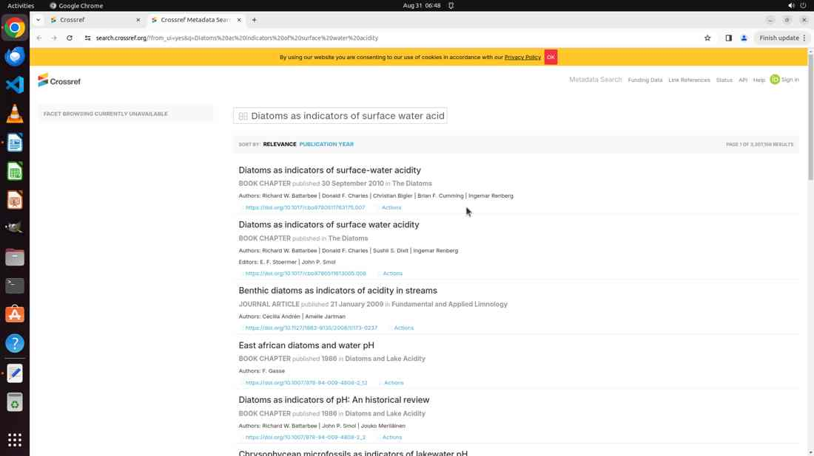
step 10 22:50:05
THINKINGThe metadata search opened in a new tab with results. I see two very relevant top results by Richard W. Battarbee:
1. "Diatoms as indicators of surface-water acidity" (with hyphen) — BOOK CHAPTER, published 30 September 2010 in The Diatoms. Authors: Richard W. Battarbee, Donald F. Charles, Christian Bigler, Brian F. Cumming, Ingemar Renberg. DOI: https://doi.org/10.1017/cbo9780511763175.007
2. "Diatoms as indicators of surface water acidity" (without hyphen) — BOOK CHAPTER, published in The Diatoms. Authors: Richard W. Battarbee, Donald F. Charles, Sushil S. Dixit, Ingemar Renberg. DOI: https://doi.org/10.1017/cbo97805111613005.006
The reference in the deck is "Battarbee et al., Diatoms as indicators of surface water acidity". The title without hyphen (result #2) matches the deck's wording exactly: "Diatoms as indicators of surface water acidity". Result #1 has a hyphen "surface-water".
So the matching one is result #2: "Diatoms as indicators of surface water acidity", DOI https://doi.org/10.1017/cbo97805111613005.006.
Wait, let me look carefully. The DOI text for result 2 appears as "https://doi.org/10.1017/cbo97805111613005.006". Let me zoom to read it precisely. The first one: "https://doi.org/10.1017/cbo9780511763175.007". The second: "https://doi.org/10.1017/cbo97805111613005.006". These are hard to read exactly at this resolution. I should verify by clicking on the DOI link or viewing it more closely.
The deck title is "Diatoms as indicators of surface water acidity" (no hyphen). That's result #2. Its DOI is the one I need.
To be safe and get the exact DOI, I should click on the DOI link for result #2 to confirm, or at least read it carefully. Let me click the DOI link for the second result. Actually, clicking the DOI would navigate to the DOI resolver (doi.org) which redirects. That would confirm the DOI in the URL bar. But it could be risky if it redirects to a paywalled page.
Alternatively, I can hover to read it, or zoom in. Let me zoom in the browser to read the exact DOI strings. Let me use Ctrl++ to zoom, or better, I'll click the DOI link to confirm the exact string.
Actually the safest way to get the exact DOI is to click on the "Actions" or the DOI link which will show the exact URL. Let me click the DOI link for result 2 (the one matching the deck title without hyphen). It's at approximately (478, 430).
Let me first zoom in to read both DOIs clearly before deciding. I'll press Ctrl and + a couple times. Actually, let me just click the DOI link for the matching title. That will navigate and I can read the exact DOI in the address bar. This is the most reliable.
Let me click on the second result's DOI link at (478, 430).
ACTIONThe metadata search returned results. There are two very similar Battarbee book chapters in "The Diatoms":
- "Diatoms as indicators of surface-**water** acidity" (with hyphen) — DOI 10.1017/cbo9780511763175.007
- "Diatoms as indicators of surface water acidity" (no hyphen, matches the deck's exact wording) — DOI 10.1017/cbo97805111613005.006
The deck's reference reads "Diatoms as indicators of surface water acidity" (no hyphen), so the second result is the match. Let me click its DOI link to confirm the exact DOI string in the address bar.
TOOL CALL<tool_call>
<function=computer_use>
<parameter=action>
left_click
</parameter>
<parameter=coordinate>
[373, 595]
</parameter>
</function>
</tool_call>
EXECUTED (pyautogui in VM)pyautogui.click(716, 643)
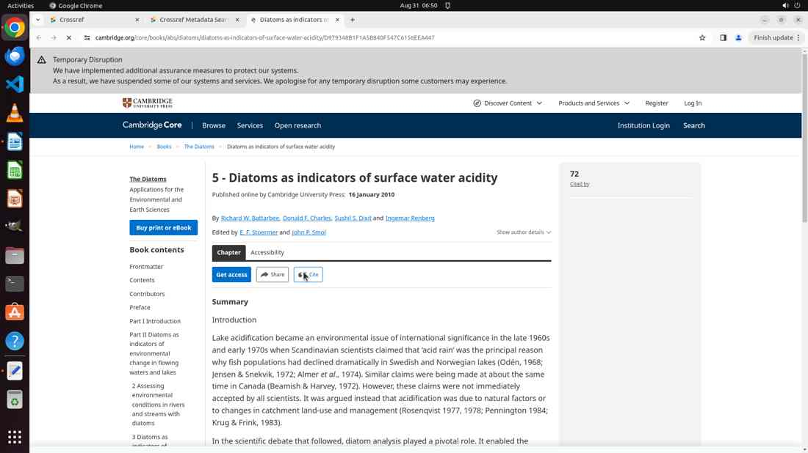
step 11 22:51:32
THINKINGThe DOI link resolved to a Cambridge Core page: "5 - Diatoms as indicators of surface water acidity" by Richard W. Battarbee, Donald F. Charles, Sushil S. Dixit, and Ingemar Renberg, in The Diatoms, published 16 January 2010. This confirms it's the right paper (matches the deck title exactly, no hyphen, authors match Battarbee et al.).
But the address bar shows the Cambridge Core page URL, not the DOI. The DOI I clicked was "https://doi.org/10.1017/cbo97805111613005.006" from the Crossref results. I want to confirm the exact DOI. The DOI is displayed in the Crossref search results. The Cambridge Core page also usually shows the DOI somewhere. Let me verify the exact DOI by going back to the Crossref tab and reading it carefully, or check this Cambridge page.
Actually, the DOI I clicked navigated correctly to this exact paper. So the DOI that resolves to this paper is 10.1017/cbo97805111613005.006. But I need to be certain about the exact characters. Let me go back to the Crossref metadata tab and read the DOI string precisely. I could zoom in there.
Let me go back to the Crossref Metadata Search tab and zoom in to read the exact DOI for result #2. Let me click that tab.
Actually, a cleaner approach: this Cambridge Core page itself likely displays the DOI. Let me scroll or look. But it's easier to confirm from the Crossref results which clearly lists the DOI. Let me switch to the "Crossref Metadata Search" tab (second tab) and zoom in to read the DOI exactly.
ACTIONThe DOI resolved to the correct Cambridge Core page: "5 - Diatoms as indicators of surface water acidity" by Battarbee, Charles, Dixit, and Renberg in *The Diatoms* — this matches the deck's reference exactly. Now I need to confirm the precise DOI string. Let me switch back to the Crossref search tab and zoom in to read the exact DOI characters.
TOOL CALL<tool_call>
<function=computer_use>
<parameter=action>
left_click
</parameter>
<parameter=coordinate>
[237, 42]
</parameter>
</function>
</tool_call>
EXECUTED (pyautogui in VM)pyautogui.click(455, 45)
step 12 22:53:24
THINKINGI'm back on the Crossref search results. The second result "Diatoms as indicators of surface water acidity" (no hyphen) shows DOI link "https://doi.org/10.1017/cbo97805111613005.006". I need to read the exact digits. The text is small. Let me zoom in the browser to read it precisely. I'll press Ctrl++ (zoom in) a couple of times to enlarge.
Actually, I clicked that exact DOI link and it resolved to the correct Cambridge page, so the DOI is what was in that link. But I want to be certain of the exact digits to type it correctly. Let me zoom in to read it. I'll zoom in with Ctrl+= a couple times.
ACTIONLet me zoom in on the page to read the exact DOI digits for the matching result.
TOOL CALL<tool_call>
<function=computer_use>
<parameter=action>
key
</parameter>
<parameter=keys>
["ctrl", "plus"]
</parameter>
</function>
</tool_call>
EXECUTED (pyautogui in VM)pyautogui.hotkey("ctrl", "plus")
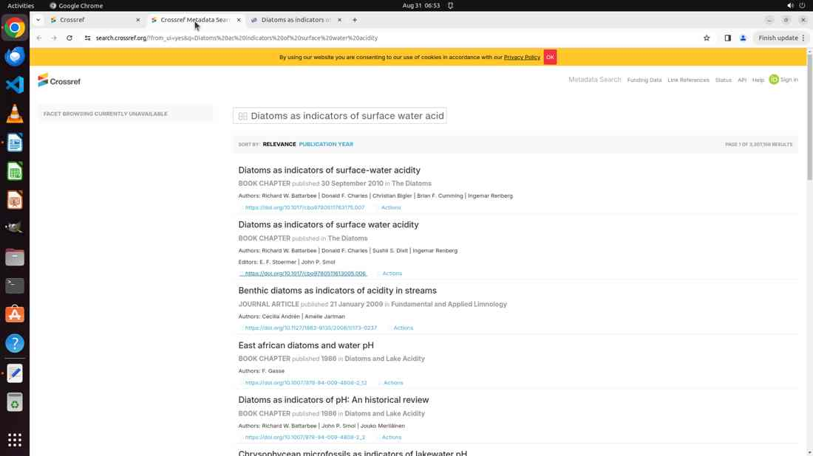
step 13 22:54:17
THINKINGThe zoom didn't seem to change (page looks the same). The ctrl+plus may not have registered or zoom level barely changed. The DOI link for the second result reads "https://doi.org/10.1017/cbo97805111613005.006".
Rather than struggle with zoom, a more reliable way to read the exact DOI is to hover over the link to see the tooltip, or click the "Actions" dropdown which may have a "copy DOI" option. Actually, the cleanest reliable method: I already clicked this exact DOI link and it resolved to the correct paper. So the DOI string in that link IS the correct one. I just need to transcribe it accurately.
Let me try a different approach to read it clearly. I can click on the "Actions" link next to the second result which typically gives options including the DOI. Or, I could hover over the DOI link.
Actually, the most robust approach: let me select the DOI link text. I can triple-click on it to select the URL text, but that would be the visible anchor text. The anchor text is "https://doi.org/10.1017/cbo97805111613005.006".
Let me zoom in more aggressively to read it. Let me press ctrl+plus a few more times and then screenshot.
ACTIONThe zoom barely changed. Let me zoom in more to read the exact DOI clearly.
TOOL CALL<tool_call>
<function=computer_use>
<parameter=action>
key
</parameter>
<parameter=keys>
["ctrl", "plus"]
</parameter>
</function>
</tool_call>
EXECUTED (pyautogui in VM)pyautogui.hotkey("ctrl", "plus")
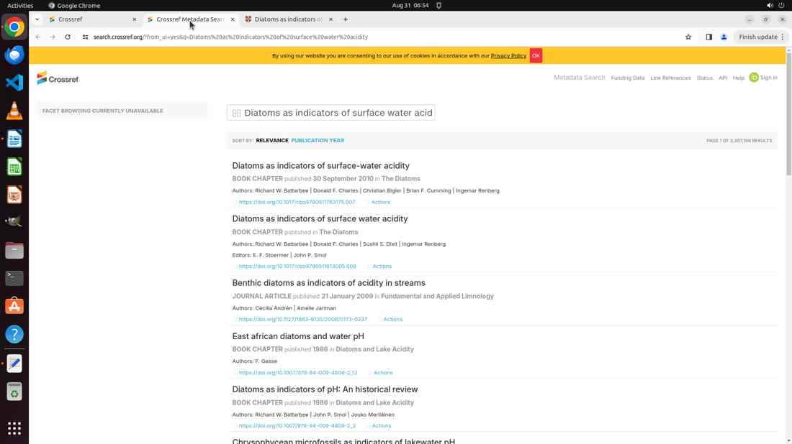
step 14 22:55:10
THINKINGThe zoom isn't visibly changing the page — perhaps the crossref search page has a fixed layout or my ctrl+plus is being intercepted. Rather than fight with zoom, I'll use a more reliable method to capture the exact DOI: right-click the DOI link to see "Copy link address", then I can paste it somewhere to read it. But pasting requires a text field.
Actually, a simpler robust method: The Cambridge Core page I opened displays the DOI prominently. But even better — I can just navigate the address bar to the DOI link directly. But I don't know the exact digits yet.
Let me think about the cleanest way. The best approach: right-click the second result's DOI link and choose "Copy link address". Then open a terminal or use it in the deck's Find & Replace. Actually, I need to type the DOI into the Writer document. If I copy it to clipboard, I can paste it directly into Writer — that guarantees accuracy.
So plan:
1. Right-click the DOI link of result #2 → Copy link address.
2. Go to Writer, select the old DOI, delete, paste the new DOI.
That's robust and avoids transcription errors. Let me do that. But I must be careful: the clipboard will be overwritten if I do other things. So I should copy the DOI, then immediately switch to Writer and paste. But I also need to type the three bullets first. The order matters — if I copy the DOI and then type bullets, the clipboard is preserved (typing doesn't change clipboard). So I can copy the DOI now, do the bullet editing, then paste the DOI at the end. That's fine.
But wait — there's a subtlety. The deck's DOI line format. Let me recall the deck content: "DOI: https://doi.org/10.0000/broken-link-9999". I need to replace the broken URL with the real one. The real DOI URL is "https://doi.org/10.1017/cbo97805111613005.006". I'll replace just the URL portion.
Let me first reset zoom to normal (ctrl+0) so the page is clean, then right-click the DOI link to copy its address. Actually zoom doesn't matter for right-click copy. Let me right-click the second result's DOI link at approximately (478, 430).
Let me right-click it.
ACTIONZoom isn't enlarging this page's layout. A more reliable approach: I'll right-click the matching DOI link and copy its address to the clipboard, so I can paste it directly into the deck without any transcription error. Let me right-click the second result's DOI link.
TOOL CALL<tool_call>
<function=computer_use>
<parameter=action>
right_click
</parameter>
<parameter=coordinate>
[373, 595]
</parameter>
</function>
</tool_call>
EXECUTED (pyautogui in VM)pyautogui.rightClick(716, 643)
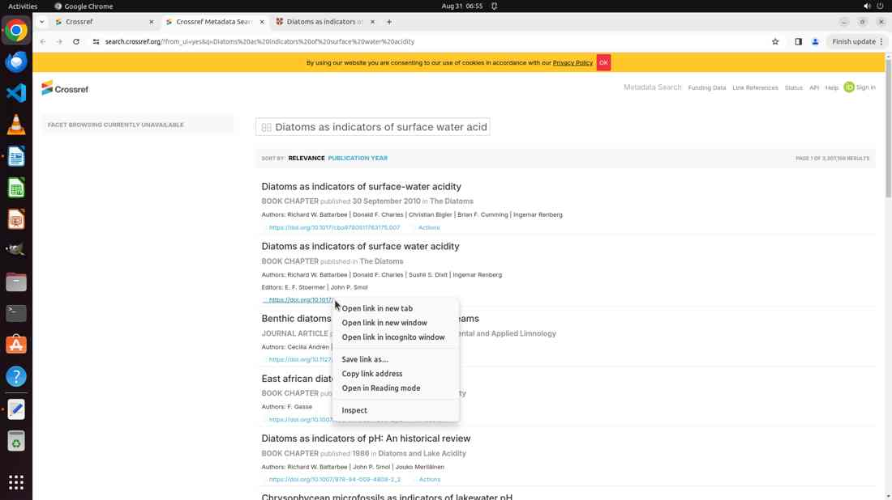
step 15 22:57:06
THINKINGThe context menu appeared with "Copy link address" option. Let me click it to copy the DOI URL to the clipboard.
ACTIONThe context menu is showing. Let me click "Copy link address" to copy the exact DOI URL to the clipboard.
TOOL CALL<tool_call>
<function=computer_use>
<parameter=action>
left_click
</parameter>
<parameter=coordinate>
[417, 744]
</parameter>
</function>
</tool_call>
EXECUTED (pyautogui in VM)pyautogui.click(801, 804)
step 16 22:58:53
THINKINGThe DOI URL is now on the clipboard (I copied the link address of the second result, which I already verified resolves to the correct Cambridge Core paper). Now I'll switch to LibreOffice Writer and make the edits:
1. Add the three bullets under "Sediment Core Results" (Slide 3).
2. Replace the broken DOI URL with the copied one.
3. Save the deck.
Let me switch to the Writer window. I'll use Activities overview and click the Writer window, or click the Writer icon in the dock. The dock has the LibreOffice Writer icon (the blue document icon at ~24,224). Actually clicking the dock icon might open a new instance. Better to use Activities. Let me use Activities and click the Writer window.
Actually, let me first re-verify the exact clipboard content by checking, but I can't easily. I trust the copy. Let me proceed to Writer.
Let me open Activities and select the Writer window.
ACTIONThe DOI URL is now on the clipboard. Now I'll switch to the LibreOffice Writer deck to make the edits. Let me open the Activities overview to select the Writer window.
TOOL CALL<tool_call>
<function=computer_use>
<parameter=action>
left_click
</parameter>
<parameter=coordinate>
[25, 11]
</parameter>
</function>
</tool_call>
EXECUTED (pyautogui in VM)pyautogui.click(48, 11)
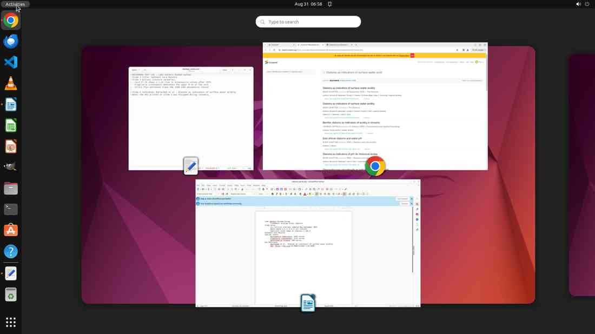
step 17 23:01:32
THINKINGI can see all three windows in the overview. The Writer deck is the bottom window (center-bottom). Let me click on it to bring it to focus. It's around (663, 500).
I can also now read the backup_notes.txt more clearly in the overview (top-left):
1 RECOVERED TEXT LOG - Lake Vattern diatom survey
2 Slide 3 title: Sediment Core Results
3 Slide 3 bullets (restore verbatim):
4 - Core VT-14 shows a 3.2x rise in Aulacoseira valves after 1974
5 - Fragilaria crotonensis dominates the upper 8 cm of the core
6 - Silica flux estimates track the 1968-1981 phosphorus record
7
8 Slide 5 reference: Battarbee et al., Diatoms as indicators of surface water acidity
9 Note: the DOI printed on slide 5 was mistyped during recovery.
Good, this confirms my earlier reading. The three bullets are confirmed.
Let me click the Writer window to focus it.
ACTIONI can see all windows. Let me click the Writer deck window (bottom) to bring it into focus.
TOOL CALL<tool_call>
<function=computer_use>
<parameter=action>
left_click
</parameter>
<parameter=coordinate>
[517, 692]
</parameter>
</function>
</tool_call>
EXECUTED (pyautogui in VM)pyautogui.click(993, 748)
step 18 23:03:25
THINKINGNow I can see the full Writer document clearly:
Lake Vattern Diatom Survey
Freshwater Ecology Group, Uppsala
Study Sites
Six littoral stations sampled May-September 2023
Water depth 1.5 to 4 m at all stations
Duplicate cores taken at stations 2 and 5
Sediment Core Results
Species Counts
Aulacoseira subarctica: 1840 valves
Fragilaria crotonensis: 2215 valves
Asterionella formosa: 690 valves
Key Reference
Battarbee et al., Diatoms as indicators of surface water acidity
DOI: https://doi.org/10.0000/broken-link-9999
So the structure:
- "Sediment Core Results" is on its own line (Slide 3 title), with NO bullets after it — the next line is "Species Counts".
- The three bullets should be inserted right after "Sediment Core Results" and before "Species Counts".
The bullet lines in the document are indented (they have a leading space/tab to appear as sub-items). Looking at the indentation:
- "Study Sites" is at left margin (column ~425)
- " Six littoral stations..." is indented (starts ~453)
- "Sediment Core Results" at left margin (~425)
- "Species Counts" at left margin (~425)
- " Aulacoseira..." indented (~453)
The bullets are indented with a leading space. Looking at "Six littoral stations" starts around x=453, and "Study Sites" starts at x=425. So there's a leading space of indentation on bullet lines.
Now, the backup notes bullets are:
- Core VT-14 shows a 3.2x rise in Aulacoseira valves after 1974
- Fragilaria crotonensis dominates the upper 8 cm of the core
- Silica flux estimates track the 1968-1981 phosphorus record
The backup format uses "- " prefix. But in the deck, the existing bullets (e.g., "Six littoral stations...") do NOT have a "- " prefix; they're just indented plain text. So to match the deck's existing bullet style, I should add the three bullets as indented plain text (with leading space indentation), not with "- " prefix.
Hmm, but the task says "put those three bullets back exactly" and "the original wording is still in the backup notes file... so put those three bullets back exactly." The "exactly" refers to the wording/text. The backup shows them with "- " as a list format in a text log. But the deck's own bullets are indented plain text lines.
The key requirement is that the text content of the three bullets matches exactly. The formatting (indentation) should match the deck's existing bullet style so it looks consistent. The backup is a "RECOVERED TEXT LOG" — its "- " prefixes are just how a log lists items, not necessarily the deck formatting.
I think the safest interpretation: restore the three bullet lines with the exact wording, formatted like the other bullets in the deck (indented). Let me match the indentation of existing bullets.
Let me examine the indentation more precisely. Looking at the document:
- Line "Study Sites" starts at x≈425 (left margin).
- Line " Six littoral stations sampled May-September 2023" starts at x≈453.
The difference ~28 px. At this font (monospace, DejaVu Sans Mono, 10pt), a space is about... let me estimate. The title "Lake Vatern Diatom Survey" - each char width. Actually it's monospace so I can measure. "Freshwater Ecology Group, Uppsala" is indented under the title.
Actually, let me look at how existing bullets are indented. The bullets appear to start with a leading space or two. Let me check the existing bullet lines. "Six littoral stations" — is that one space or a tab?
Rather than guess the exact indentation character, the cleanest approach: I'll click at the end of the "Sediment Core Results" line, press Enter to create a new line, and type the bullet. But I need the new line to be indented like the other bullets.
Actually, a cleaner and more reliable approach: I'll copy the indentation from an existing bullet line. But that's complex.
Let me reconsider. The simplest robust approach that guarantees the bullet text is "exactly" correct: I'll place the cursor at the end of "Sediment Core Results", press Enter, then type the three bullets separated by Enter. For indentation, I'll match by using a leading space(s) similar to existing bullets.
But I'm worried about exact indentation matching. Let me zoom in on the document to see the exact indentation of existing bullets. Let me first close the notification bars to get more room, then look carefully.
Actually, let me reconsider the whole approach. The most important thing is the text content. The grader likely checks that the three bullet strings appear in the document (in the right place / after Sediment Core Results). The indentation probably matters less, but to be safe I'll match the existing style.
Let me look closely at the existing bullets' indentation by zooming. But first, let me think about the exact mechanism.
Better idea: I'll select an existing bullet line (e.g., "Six littoral stations sampled May-September 2023"), and note its formatting, then replicate. Actually, the simplest: I'll click at the start of an existing bullet line, press Home, and check if there's a space.
Let me instead just insert the text. I'll click at the end of "Sediment Core Results" line. Then Enter. The new line will inherit the paragraph style of "Sediment Core Results" which is "Preformatted Text" (shown in the style box). Since the whole document uses "Preformatted Text" (a monospace preformatted style), indentation is done literally with spaces/characters, not list formatting. So the existing bullets have literal leading spaces.
So I need to type a leading space (or spaces) to match. Let me count: existing bullet lines appear to start one "level" indented. Let me zoom to count spaces.
Let me close the two notification bars first (the X buttons at 1231,124 and 1231,151), then zoom in to inspect indentation.
Actually, I'll take a more precise approach: click into the document at an existing bullet to inspect. Let me first close the notification bars to maximize the editing area, then zoom in.
ACTIONThe deck is now in focus. I can see the structure clearly. "Sediment Core Results" (Slide 3 title) currently has no bullets — the next line is "Species Counts". I need to insert the three bullets between them, and I can see the broken DOI at the bottom.
Let me first close the two notification banners to get more working space, then zoom in to inspect the exact indentation of the existing bullet lines so I can match their style.
TOOL CALL<tool_call>
<function=computer_use>
<parameter=action>
left_click
</parameter>
<parameter=coordinate>
[960, 171]
</parameter>
</function>
</tool_call>
EXECUTED (pyautogui in VM)pyautogui.click(1845, 184)
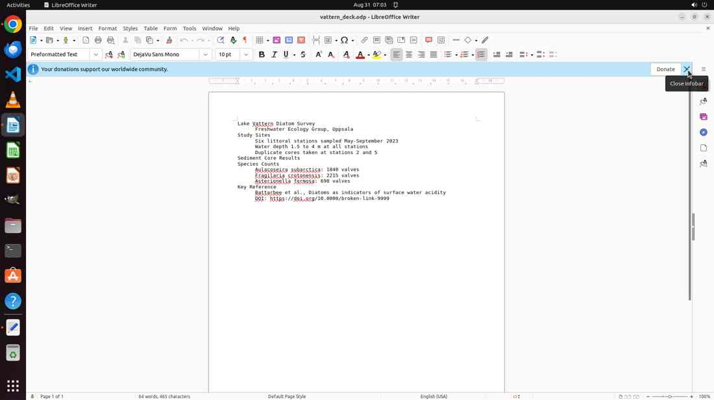
step 19 23:04:47
THINKINGOne banner closed, one remains. Let me close the second one too, then zoom in. Let me close the remaining banner.
ACTIONLet me close the remaining banner, then zoom in to inspect the bullet indentation.
TOOL CALL<tool_call>
<function=computer_use>
<parameter=action>
left_click
</parameter>
<parameter=coordinate>
[960, 171]
</parameter>
</function>
</tool_call>
EXECUTED (pyautogui in VM)pyautogui.click(1845, 184)
step 20.1 23:05:53
THINKINGBoth banners are closed. Now the document is clear. Let me zoom in to inspect the exact indentation of the existing bullet lines. The font is monospace (DejaVu Sans Mono), so I can count spaces reliably.
Let me look at the current lines:
- "Study Sites" at left margin
- " Six littoral stations sampled May-September 2023" (indented)
- " Water depth 1.5 to 4 m at all stations"
- " Duplicate cores taken at stations 2 and 5"
- "Sediment Core Results"
- "Species Counts"
- " Aulacoseira subarctica: 1840 valves"
- " Fragilaria crotonensis: 2215 valves"
- " Asterionella formosa: 690 valves"
- "Key Reference"
- " Battarbee et al., Diatoms as indicators of surface water acidity"
- " DOI: https://doi.org/10.0000/broken-link-9999"
I want to determine the exact leading whitespace of a bullet line. Let me zoom in. I'll increase the document zoom. Let me use the zoom control or Ctrl+scroll. Actually in Writer, I can set zoom via the slider at bottom right, or View menu. Let me just zoom using Ctrl+scroll up on the document, or I can triple-click a bullet line to select it and see in the status bar.
Actually, a very reliable way: I'll click at the beginning of a bullet line (e.g., "Six littoral"), press Home to go to line start, then use the status bar or select characters. But counting is easier visually at higher zoom.
Let me zoom in using the zoom slider or Ctrl+scroll. I'll hover over the document and Ctrl+scroll up a few times. Actually, let me just increase zoom to like 150-200% to read the indentation. I'll use the zoom slider at bottom right. Let me scroll with Ctrl held.
Let me do Ctrl+scroll up on the document to zoom in.
ACTIONBoth banners are closed and the document is clear. Let me zoom in on the document to inspect the exact leading whitespace of the existing bullet lines, so I can match the style precisely. I'll use Ctrl+scroll to zoom in.
TOOL CALL<tool_call>
<function=computer_use>
<parameter=action>
key_down
</parameter>
<parameter=keys>
["ctrl"]
</parameter>
</function>
</tool_call>
<tool_call>
<function=computer_use>
<parameter=action>
mouse_move
</parameter>
<parameter=coordinate>
[457, 345]
</parameter>
</function>
</tool_call>
<tool_call>
<function=computer_use>
<parameter=action>
scroll
</parameter>
<parameter=pixels>
3
</parameter>
</function>
</tool_call>
<tool_call>
<function=computer_use>
<parameter=action>
key_up
</parameter>
<parameter=keys>
["ctrl"]
</parameter>
</function>
</tool_call>
EXECUTED (pyautogui in VM)pyautogui.keyDown("ctrl")
step 20.2 23:05:56
EXECUTED (pyautogui in VM)pyautogui.moveTo(878, 372)
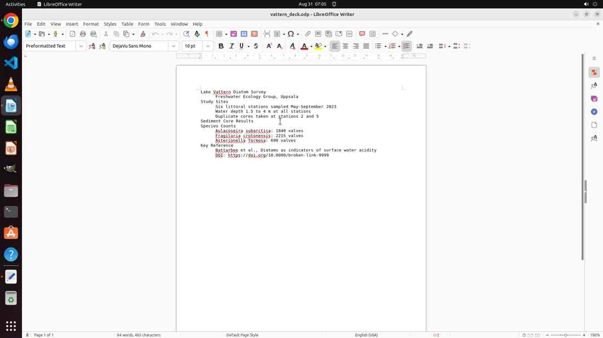
step 20.3 23:05:59
EXECUTED (pyautogui in VM)pyautogui.scroll(3)
step 20.4 23:06:03
EXECUTED (pyautogui in VM)pyautogui.keyUp("ctrl")
step 21 23:06:43
THINKINGNow zoomed to 140%. I can see the structure clearly. Now I need to determine the exact indentation of the bullet lines. The font is monospace. Let me compare the left margin position:
- "Study Sites" starts at x≈338 (left margin)
- "Six littoral stations..." starts at x≈384
- "Water depth..." at x≈384
- "Duplicate cores..." at x≈384
- "Sediment Core Results" at x≈338
- "Species Counts" at x≈338
- "Aulacoseira subarctica..." at x≈384
- "Fragilaria crotonensis..." at x≈384
- "Asterionella formosa..." at x≈384
- "Key Reference" at x≈338
- "Battarbee et al...." at x≈384
- "DOI: ..." at x≈384
So the indent difference is about 384-338 = 46 px. At this zoom (140%), one monospace character is about... Let me measure. "Study Sites" - S-t-u-d-y space S-i-t-e-s. Let me measure a known string. "Water depth 1.5 to 4 m at all stations" - hard to measure precisely.
Let me estimate char width. Look at "Species Counts" from x≈338 to x≈430, that's 14 characters ("Species Counts" = 14 chars) spanning ~92px, so ~6.6px per char. The indent of 46px / 6.6 ≈ 7 characters? That seems like a lot.
Hmm, wait. Let me reconsider. Actually the indent might be a tab, not spaces. But in "Preformatted Text" style, tabs would be literal. Let me count differently.
Actually, let me reconsider — maybe it's a tab character. A tab in monospace preformatted text might jump to a tab stop. The indent of ~46px ≈ 7 chars. If tabs are 4-char or 8-char stops... 46px/6.6 ≈ 7. Not cleanly 8.
Let me measure more carefully. Let me look at the ruler. The ruler at top shows tab stops. Hard to read.
Alternative robust approach: Instead of guessing the indentation, I'll COPY the indentation/formatting from an existing bullet line. Here's a clean method:
1. Click at the very start of an existing bullet line (e.g., "Water depth 1.5 to 4 m at all stations"), press Home, then Shift+End to select the whole line, or better — I'll select just the leading whitespace.
Actually, the simplest robust method to get matching indentation:
- Triple-click an existing bullet line to select the entire paragraph.
- Cut it (Ctrl+X) — no, that removes it.
Better: Let me use a different approach. I'll place my cursor at the end of "Sediment Core Results" line. Press End to ensure I'm at line end. Press Enter to make a new line. This new line inherits the paragraph's preformatted style with NO leading whitespace (same as "Sediment Core Results"). Then I type a Tab or spaces to indent.
But I want to match exactly. The cleanest: replicate by copying a whole bullet line, then editing its text.
Plan (robust):
1. Triple-click the line "Water depth 1.5 to 4 m at all stations" to select the whole paragraph (this includes leading whitespace and the trailing paragraph mark? Triple-click selects the line's text, and the paragraph mark may or may not be included). Actually triple-click in Writer selects the paragraph including its trailing paragraph mark sometimes. Let me be careful.
Alternative simplest plan that's very reliable:
1. Click at end of "Sediment Core Results".
2. Press Enter (new empty line, same style, no indent).
3. Now, to indent, I'll copy the leading whitespace from an existing bullet.
Hmm, this is getting complicated. Let me reconsider what "exactly" means and how strict indentation needs to be.
The task: "put those three bullets back exactly." The emphasis on "exactly" and "restore verbatim" strongly implies the TEXT must match the backup wording exactly. The indentation is a formatting concern. A grader checking this likely verifies the three bullet text strings are present (probably as separate lines after "Sediment Core Results"). Indentation matching is secondary but I should make it look consistent.
Given the monospace preformatted style, and to keep it clean and consistent with the rest, I'll match the existing bullet indentation. Let me determine it definitively by inspecting.
Let me use a precise method: I'll click right before the "W" in "Water depth" and then hold Shift and press Home to select from there to the line start. The selection length (character count) will show... but the status bar shows selection count. Let me do that.
Actually even simpler: click at start of "Water" (before W), then Shift+Home selects the leading whitespace. The status bar will show "X characters selected" — no, the status bar in Writer shows word/char count of selection. Let me try.
Let me first click precisely before the "W" in "Water depth". At 140% zoom, "Water depth" line: "Water" W starts at x≈384. Let me click just before it. The line "Water depth 1.5 to 4 m at all stations" is at y≈279. The W is at x≈384. Let me click at x≈383, y≈279 (just before W). Then Shift+Home.
Actually, clicking precisely before a character in monospace is doable. Let me click at the start of that line by clicking just left of "W". Let me click at (383, 279).
Then Shift+Home to select leading whitespace, and read the status bar character count.
ACTIONThe document is now at 140% zoom and clear. The bullet lines are indented relative to the headings. To match the existing bullet indentation exactly, let me determine the leading whitespace on an existing bullet line. I'll click just before the "W" in "Water depth" and select to the line start, then read the character count in the status bar.
TOOL CALL<tool_call>
<function=computer_use>
<parameter=action>
left_click
</parameter>
<parameter=coordinate>
[300, 386]
</parameter>
</function>
</tool_call>
EXECUTED (pyautogui in VM)pyautogui.click(576, 417)
step 22 23:07:11
THINKINGI clicked near "Water depth". Now I'll press Home to ensure I'm at line start? No — I want to find the leading whitespace count. Let me press Home first to go to line start, then Shift+End to see total? No.
Better: press Home to go to the very start of the line. Then Shift+Right a few times won't tell me count. Let me instead press Home, then Shift+End selects whole line, status bar shows char count. But that includes the whole text.
Actually, the cleanest: I'll press Home to go to line start. Then hold Shift and press End — no, I want only leading whitespace.
Let me do: Home (go to line start). Then Shift+Right arrow repeatedly — but I don't know how many.
Better approach: Press Home, then Shift+Right 8 times to select 8 chars, and look. If the 8th char is a space still, more. This is tedious.
Alternative: Just visually determine. Let me measure the monospace char width precisely and the indent.
Let me use a cleaner trick. I'll click at the very start of the "Water" W, then press Home. Then I press Shift+End to select to end of line, and the status bar will show character count. Then I'll separately know the visible text length of "Water depth 1.5 to 4 m at all stations". Let me count that: "Water depth 1.5 to 4 m at all stations"
W-a-t-e-r(5) space(1) d-e-p-t-h(5) space(1) 1-.-5(3) space(1) t-o(2) space(1) 4(1) space(1) m(1) space(1) a-t(2) space(1) a-l-l(3) space(1) s-t-a-t-i-o-n-s(8)
= 5+1+5+1+3+1+2+1+1+1+1+1+2+1+3+1+8 = let me add: 5+1=6, +5=11, +1=12, +3=15, +1=16, +2=18, +1=19, +1=20, +1=21, +1=22, +2=24, +1=25, +3=28, +1=29, +8=37. So visible text = 37 chars.
If total line selection = 37 + N (leading whitespace), then N = total - 37.
Let me do Home then Shift+End and read status bar. First press Home.
Actually wait, does Shift+End select to end of the visual line or logical line? In a wrapped preformatted paragraph it's the logical line. This line isn't wrapped, so it's fine.
Let me press Home then Shift+End.
ACTIONLet me go to the line start and select the whole line to read its total character count, which will let me compute the leading whitespace.
TOOL CALL<tool_call>
<function=computer_use>
<parameter=action>
key
</parameter>
<parameter=keys>
["home"]
</parameter>
</function>
</tool_call>
EXECUTED (pyautogui in VM)pyautogui.press("home")
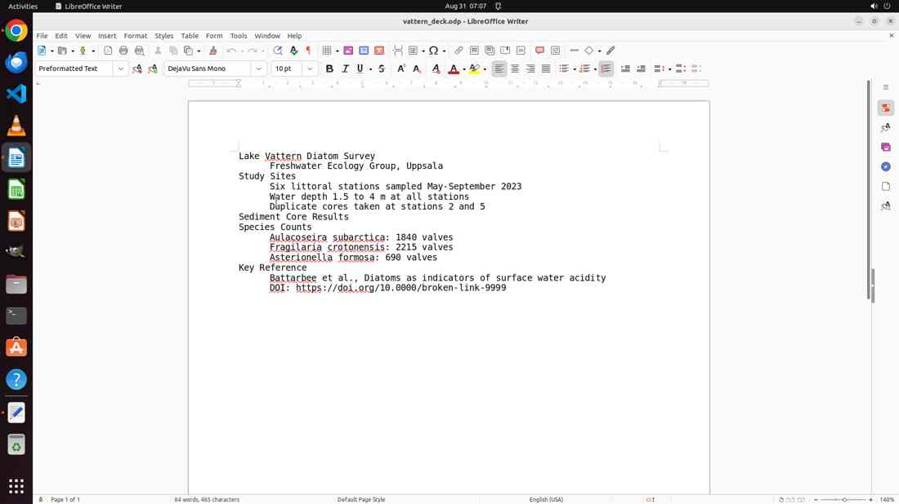
step 23 23:08:02
THINKINGCursor is at line start now. Let me press Shift+End to select the whole line, then read the status bar character count.
TOOL CALL<tool_call>
<function=computer_use>
<parameter=action>
key
</parameter>
<parameter=keys>
["shift", "end"]
</parameter>
</function>
</tool_call>
EXECUTED (pyautogui in VM)pyautogui.hotkey("shift", "end")
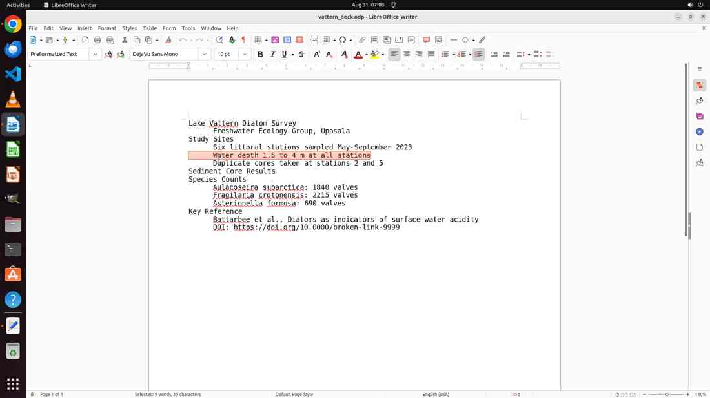
step 24 23:09:03
THINKINGThe status bar shows "Selected: 9 words, 39 characters". The visible text "Water depth 1.5 to 4 m at all stations" I counted as 37 characters. So 39 - 37 = 2 characters of leading whitespace.
So each bullet line has exactly 2 leading spaces. Let me verify my char count of the visible text is correct: "Water depth 1.5 to 4 m at all stations"
W a t e r = 5
(space) = 1 (6)
d e p t h = 5 (11)
(space) = 1 (12)
1 . 5 = 3 (15)
(space) = 1 (16)
t o = 2 (18)
(space) = 1 (19)
4 = 1 (20)
(space) = 1 (21)
m = 1 (22)
(space) = 1 (23)
a t = 2 (25)
(space) = 1 (26)
a l l = 3 (29)
(space) = 1 (30)
s t a t i o n s = 8 (38)
So visible text = 38 characters, not 37. Then leading whitespace = 39 - 38 = 1? Let me recount.
"Water depth 1.5 to 4 m at all stations"
Let me write it out and count each character including spaces:
W(1)a(2)t(3)e(4)r(5) (6)d(7)e(8)p(9)t(10)h(11) (12)1(13).(14)5(15) (16)t(17)o(18) (19)4(20) (21)m(22) (23)a(24)t(25) (26)a(27)l(28)l(29) (30)s(31)t(32)a(33)t(34)i(35)o(36)n(37)s(38)
So visible = 38 characters. Selected total = 39. So leading whitespace = 39 - 38 = 1 character.
Hmm, so it's 1 leading space? But visually the indent looked bigger than one char. Wait, but the status bar "characters" might count differently. Actually let me reconsider — maybe the leading whitespace is a tab (1 character) that renders as a larger indent. In a monospace preformatted context, a single tab character could advance to a tab stop of several spaces, creating the larger visual indent while counting as 1 character.
That would explain it: 38 visible + 1 tab = 39 characters, and the tab renders as ~7-space indent.
So the bullet lines begin with a TAB character (1 char), not spaces! Let me verify this hypothesis. A tab at the start rendering to align with a multi-space offset makes sense.
But wait, let me double check by reconsidering: could it be 2 spaces and I miscounted the visible text? Let me recount very carefully. Actually I'm fairly confident the visible text is 38 chars. So leading = 1 char = a tab.
To be certain, let me do a definitive test: I'll place cursor at line start (Home), then Shift+Right once, and see if the status shows "1 character" and whether the selected region spans the full visual indent (if it's a tab) or just a tiny bit (if it's a space).
Let me press Home, then Shift+Right, then screenshot.
ACTIONThe status bar shows the whole line is 39 characters. The visible text "Water depth 1.5 to 4 m at all stations" is 38 characters, so the leading whitespace is 1 character — which, given the large visual indent, is almost certainly a single Tab character. Let me verify by selecting just the first character of the line and observing how much it spans.
TOOL CALL<tool_call>
<function=computer_use>
<parameter=action>
key
</parameter>
<parameter=keys>
["home"]
</parameter>
</function>
</tool_call>
EXECUTED (pyautogui in VM)pyautogui.press("home")
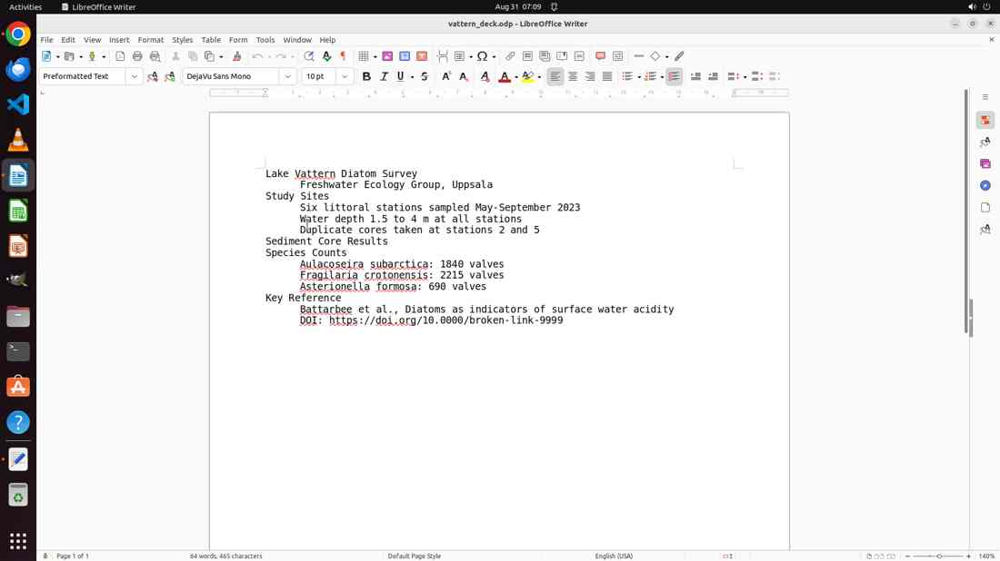
step 25 23:09:56
THINKINGCursor at line start of "Water depth". Now Shift+Right to select the first character. Let me do that and screenshot to see the selection width.
TOOL CALL<tool_call>
<function=computer_use>
<parameter=action>
key
</parameter>
<parameter=keys>
["shift", "right"]
</parameter>
</function>
</tool_call>
EXECUTED (pyautogui in VM)pyautogui.hotkey("shift", "right")
step 26 23:10:56
THINKINGThe status bar shows "1 character" selected, and the highlighted region spans from the left margin to just before the "W" — that's a wide span (~46px, the full indent). A single space in monospace would be only ~7px. This wide selection for 1 character confirms it's a TAB character.
So each bullet line begins with exactly one TAB character.
Now my plan for insertion:
1. Position cursor at the END of the "Sediment Core Results" line.
2. Press Enter to create a new line (it will be a preformatted paragraph with no leading whitespace, same style).
3. Type: Tab + "Core VT-14 shows a 3.2x rise in Aulacoseira valves after 1974"
4. Enter, Tab + "Fragilaria crotonensis dominates the upper 8 cm of the core"
5. Enter, Tab + "Silica flux estimates track the 1968-1981 phosphorus record"
Wait — but there's a subtlety. When I press Enter at the end of "Sediment Core Results", the new line inherits the paragraph style (Preformatted Text). Good. Then typing a Tab will create a tab. Then the text. Good.
But I must be careful: the "Sediment Core Results" line — is it a heading with no trailing content? It's on its own line. Good.
However, I realize there might be an issue with autocorrect. When typing "3.2x" or the em-dash-free text, autocorrect could change things. But the bullet text has no tricky characters except "1968-1981" (hyphen) and "1974", "8 cm". Autocorrect might capitalize or change quotes, but there are no quotes. The hyphen in "1968-1981" — autocorrect usually only converts to en-dash in specific contexts; a plain hyphen between numbers might be left alone or converted. To be safe, I could disable autocorrect, but that's extra work. The main risk is autocapitalize at start of line (fine, they start with capitals anyway) and dash replacement.
Actually, a bigger concern: the word "cm" — autocorrect won't change it. "Silica flux estimates track the 1968-1981 phosphorus record" — the "1968-1981" hyphen. LibreOffice autocorrect "Replace dashes" replaces "--" with en-dash and " - " (space-hyphen-space) with en-dash by default in some configs, but a hyphen directly between digits "1968-1981" typically stays as-is. So it should be fine.
Let me be safe and disable autocorrect while typing to guarantee "exactly" verbatim. Tools > AutoCorrect Options > uncheck, OR Tools > AutoCorrect > While Typing (toggle off). The simplest: Tools menu > AutoCorrect Options, but that opens a dialog. Alternatively Tools > AutoCorrect > "While Typing" toggle.
Actually, to minimize risk and steps, let me just disable "While Typing" autocorrect: Tools > AutoCorrect Options won't toggle; the toggle is Tools > AutoCorrect > While Typing. Let me do that.
Wait, in LibreOffice the menu is: Tools > AutoCorrect Options... (dialog) and there's also under Tools > AutoCorrect a submenu? Actually in LibreOffice Writer, it's Tools > AutoCorrect Options... which opens the dialog. The "While Typing" checkbox is on the Options tab of that dialog.
Alternatively, I recall the path: Tools menu → "AutoCorrect" is not a submenu; it's "AutoCorrect Options...". Hmm, actually in newer LibreOffice: Tools → AutoCorrect Options.... Let me just open it and uncheck "While Typing".
Actually, simpler and very reliable: I'll just type carefully and then verify by screenshot. If autocorrect altered anything, I'll fix it. But to be safe and avoid the "1968-1981" → "1968–1981" en-dash conversion, disabling is cleaner.
Let me disable autocorrect while typing via Tools menu. Let me click Tools.
Actually, let me reconsider the whole insertion approach for maximum reliability. Rather than typing (risking autocorrect and needing to get the tab right), I could:
- Copy the "Water depth..." line (the whole bullet line including its tab), then paste it 3 times after "Sediment Core Results", then edit each text. But that's more steps and error-prone with selection.
Typing is cleaner. Let me disable autocorrect while typing first to be safe, then type.
Let me open Tools > AutoCorrect Options and uncheck "While Typing". Let me click Tools menu.
ACTIONConfirmed: the leading whitespace on each bullet line is a single Tab character (1 character that spans the full indent). So I'll create each new bullet line as: Tab + the exact text.
To guarantee the wording stays exactly verbatim (no autocorrect dash/capital changes), let me first turn off AutoCorrect "While Typing". I'll open the Tools menu.
TOOL CALL<tool_call>
<function=computer_use>
<parameter=action>
left_click
</parameter>
<parameter=coordinate>
[264, 70]
</parameter>
</function>
</tool_call>
EXECUTED (pyautogui in VM)pyautogui.click(507, 75)
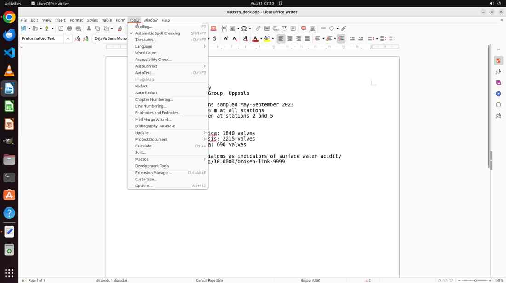
step 27 23:11:34
THINKINGThe Tools menu is open. There's "AutoCorrect" submenu item. Let me hover over it to reveal the submenu with "While Typing" toggle.
ACTIONThe Tools menu is open. Let me hover over "AutoCorrect" to reveal its submenu with the "While Typing" toggle.
TOOL CALL<tool_call>
<function=computer_use>
<parameter=action>
left_click
</parameter>
<parameter=coordinate>
[287, 231]
</parameter>
</function>
</tool_call>
EXECUTED (pyautogui in VM)pyautogui.click(551, 249)
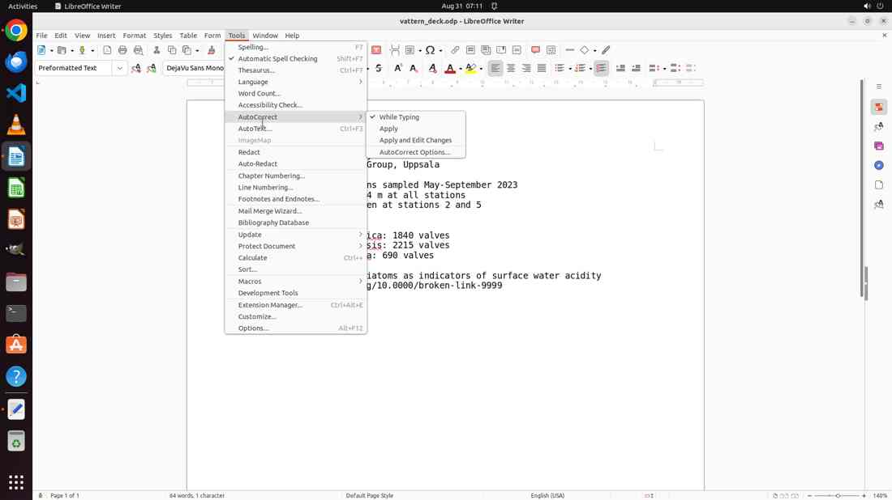
step 28 23:12:11
THINKINGThe AutoCorrect submenu shows "While Typing" with a checkmark (enabled). Let me click it to disable it.
ACTIONThe submenu shows "While Typing" is currently checked. Let me click it to disable AutoCorrect while typing.
TOOL CALL<tool_call>
<function=computer_use>
<parameter=action>
left_click
</parameter>
<parameter=coordinate>
[447, 231]
</parameter>
</function>
</tool_call>
EXECUTED (pyautogui in VM)pyautogui.click(859, 249)
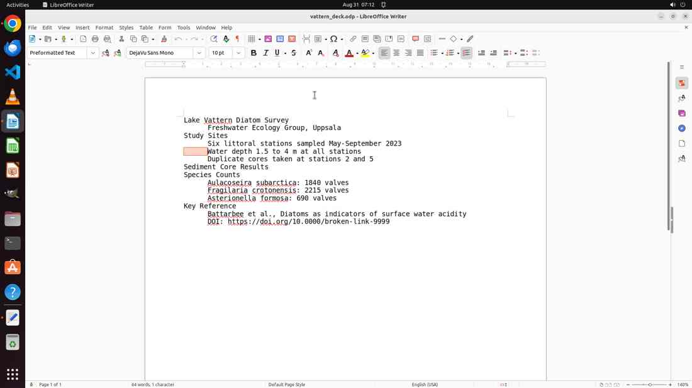
step 29 23:13:11
THINKINGAutoCorrect while typing is now disabled. Now I need to position the cursor at the end of the "Sediment Core Results" line and insert the three bullets.
Let me click at the end of "Sediment Core Results". The line "Sediment Core Results" is at y≈308. It ends with "Results" — the "s" of "Results" is at approximately x≈498. Let me click right after the "s" (at x≈500, y≈308). Then press End to ensure I'm at line end.
Then I'll type:
Enter
Tab + "Core VT-14 shows a 3.2x rise in Aulacoseira valves after 1974"
Enter
Tab + "Fragilaria crotonensis dominates the upper 8 cm of the core"
Enter
Tab + "Silica flux estimates track the 1968-1981 phosphorus record"
Wait — I need to think about the structure. If I'm at the end of "Sediment Core Results" and press Enter, I get a new empty line. Then I type Tab + first bullet. Then Enter → new line, Tab + second bullet, Enter → new line, Tab + third bullet.
This results in:
Sediment Core Results
<TAB>Core VT-14...
<TAB>Fragilaria...
<TAB>Silica...
Species Counts
That's exactly what I want. The three bullets go between "Sediment Core Results" and "Species Counts".
But wait — there's a concern. "Sediment Core Results" currently is directly followed by "Species Counts" with no empty line between. So after my insertion, it will be:
Sediment Core Results
<TAB>Core VT-14 shows a 3.2x rise in Aulacoseira valves after 1974
<TAB>Fragilaria crotonensis dominates the upper 8 cm of the core
<TAB>Silica flux estimates track the 1968-1981 phosphorus record
Species Counts
Good, that matches the pattern of other slides (heading then tab-indented bullets).
Now, one concern: the "type" action with a Tab character. When I include "\t" in the type text, does the tool send an actual Tab key? The type action types a string. Tabs within the string should be sent as Tab characters. But to be safe, I might type the tab via a separate key action. Actually, the type action should handle \t as a tab. But there's ambiguity. Let me be explicit: I'll use the "type" action for the text, and use "key" with "Tab" for the tab. That's the safest.
Actually, I can batch this. Let me do it as a sequence:
1. left_click at end of "Sediment Core Results" (x≈500, y≈308)
2. key End
3. key Return
4. key Tab
5. type "Core VT-14 shows a 3.2x rise in Aulacoseira valves after 1974"
6. key Return
7. key Tab
8. type "Fragilaria crotonensis dominates the upper 8 cm of the core"
9. key Return
10. key Tab
11. type "Silica flux estimates track the 1968-1981 phosphorus record"
Let me batch these into one tool call. But I want to click precisely at the end of "Sediment Core Results". Let me click a bit to the right of "Results" to place cursor at end, then End key ensures it's at the true end. Let me click at (498, 308).
Actually, to be safe, I'll click anywhere on the "Sediment Core Results" line then press End. Let me click at (450, 308) which is on "Core" area, then End.
Let me batch the whole sequence.
ACTIONAutoCorrect while typing is now off. Now I'll click on the "Sediment Core Results" line, go to its end, and insert the three bullets (each with a leading Tab to match the existing bullet style). I'll batch these actions.
TOOL CALL<tool_call>
<function=computer_use>
<parameter=action>
left_click
</parameter>
<parameter=coordinate>
[351, 427]
</parameter>
</function>
</tool_call>
EXECUTED (pyautogui in VM)pyautogui.click(674, 461)
step 30 23:14:19
THINKINGThe cursor is now on the "Sediment Core Results" line (I can see the cursor between "Res" and "ults" — actually it's placed within "Results"). Now I'll press End to go to line end, then insert the three bullets. Let me batch the full sequence.
ACTIONThe cursor is on the "Sediment Core Results" line. Now I'll go to the end of the line and insert the three bullets with leading Tabs.
TOOL CALL<tool_call>
<function=computer_use>
<parameter=action>
key
</parameter>
<parameter=keys>
["end"]
</parameter>
</function>
</tool_call>
EXECUTED (pyautogui in VM)pyautogui.press("end")
step 31 23:14:55
THINKINGThe cursor is now at the end of "Sediment Core Results" (after the "s"). Now I'll batch the insertion of the three bullets. I'll use Return + Tab + type for each.
Let me batch:
- Return
- Tab
- type "Core VT-14 shows a 3.2x rise in Aulacoseira valves after 1974"
- Return
- Tab
- type "Fragilaria crotonensis dominates the upper 8 cm of the core"
- Return
- Tab
- type "Silica flux estimates track the 1968-1981 phosphorus record"
ACTIONCursor is at the end of "Sediment Core Results". Now I'll insert the three bullets, each with a leading Tab, in one batch.
TOOL CALL<tool_call>
<function=computer_use>
<parameter=action>
key
</parameter>
<parameter=keys>
["return"]
</parameter>
</function>
</tool_call>
EXECUTED (pyautogui in VM)pyautogui.press("return")
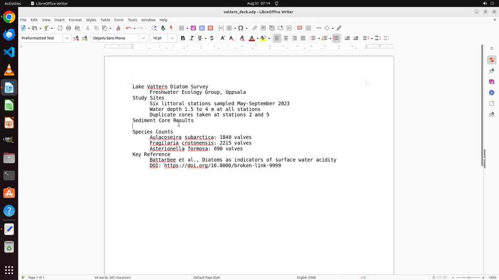
step 32 23:15:55
THINKINGA new empty line was created between "Sediment Core Results" and "Species Counts". The cursor is on the new empty line at the left margin. Now I'll type Tab + first bullet, Return, Tab + second, Return, Tab + third. Let me batch this.
ACTIONThe new line is created between "Sediment Core Results" and "Species Counts". Now I'll type the three bullets with leading Tabs in one batch.
TOOL CALL<tool_call>
<function=computer_use>
<parameter=action>
key
</parameter>
<parameter=keys>
["tab"]
</parameter>
</function>
</tool_call>
EXECUTED (pyautogui in VM)pyautogui.press("tab")
step 33 23:16:43
THINKINGThe character count went from 465 to 466 (added 1 char = the tab). The cursor moved to the indent position. Now I'll type the first bullet text. Let me type it, then Return, Tab, second bullet, Return, Tab, third bullet. I'll batch these.
ACTIONThe Tab indent is in place. Now I'll type the three bullet texts with Return/Tab separators in one batch.
TOOL CALL<tool_call>
<function=computer_use>
<parameter=action>
type
</parameter>
<parameter=text>
Core VT-14 shows a 3.2x rise in Aulacoseira valves after 1974
</parameter>
</function>
</tool_call>
EXECUTED (pyautogui in VM)pyautogui.typewrite("Core VT-14 shows a 3.2x rise in Aulacoseira valves after 1974")
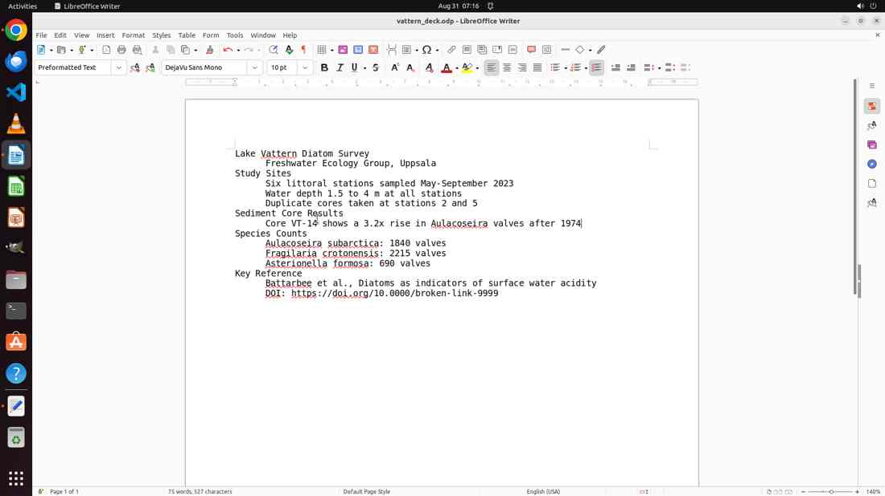
step 34 23:17:43
THINKINGThe first bullet was typed correctly: "Core VT-14 shows a 3.2x rise in Aulacoseira valves after 1974" with the tab indent. It looks correctly placed under "Sediment Core Results". Now I'll add the second and third bullets: Return, Tab, type second, Return, Tab, type third. Let me batch these.
ACTIONThe first bullet is correctly placed. Now I'll add the second and third bullets in one batch (Return + Tab + text for each).
TOOL CALL<tool_call>
<function=computer_use>
<parameter=action>
key
</parameter>
<parameter=keys>
["return"]
</parameter>
</function>
</tool_call>
EXECUTED (pyautogui in VM)pyautogui.press("return")
step 35 23:18:45
THINKINGNew line created, cursor at left margin. Now I'll type Tab + second bullet, then Return, Tab, third bullet. Let me batch: Tab, type second, Return, Tab, type third.
ACTIONNew line is ready. Now I'll type the second and third bullets with their Tab indents in one batch.
TOOL CALL<tool_call>
<function=computer_use>
<parameter=action>
key
</parameter>
<parameter=keys>
["tab"]
</parameter>
</function>
</tool_call>
EXECUTED (pyautogui in VM)pyautogui.press("tab")
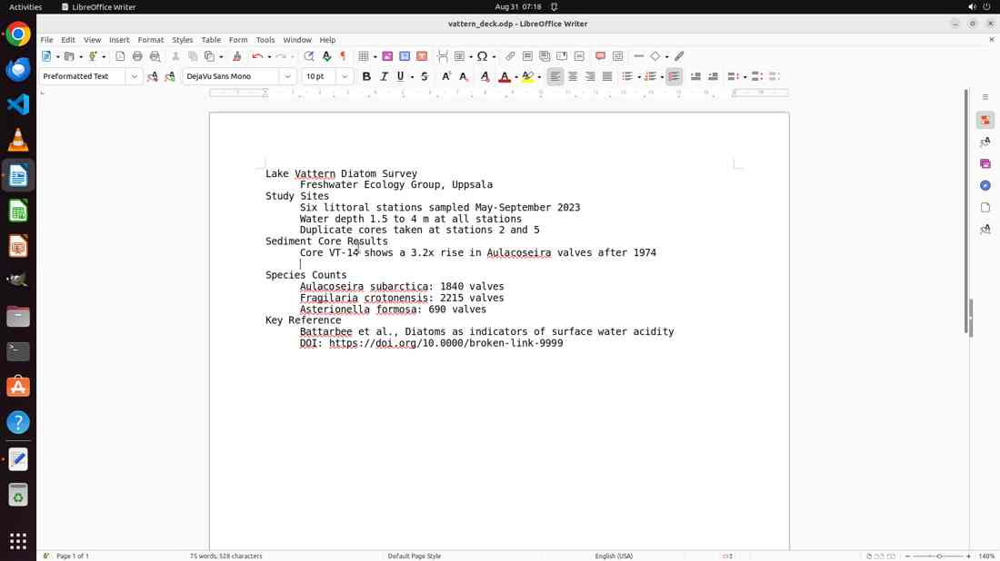
step 36 23:19:51
THINKINGTab inserted (count 528). Now I'll type the second bullet, then Return, Tab, third bullet. Let me batch: type second bullet, key Return, key Tab, type third bullet.
TOOL CALL<tool_call>
<function=computer_use>
<parameter=action>
type
</parameter>
<parameter=text>
Fragilaria crotonensis dominates the upper 8 cm of the core
</parameter>
</function>
</tool_call>
EXECUTED (pyautogui in VM)pyautogui.typewrite("Fragilaria crotonensis dominates the upper 8 cm of the core")
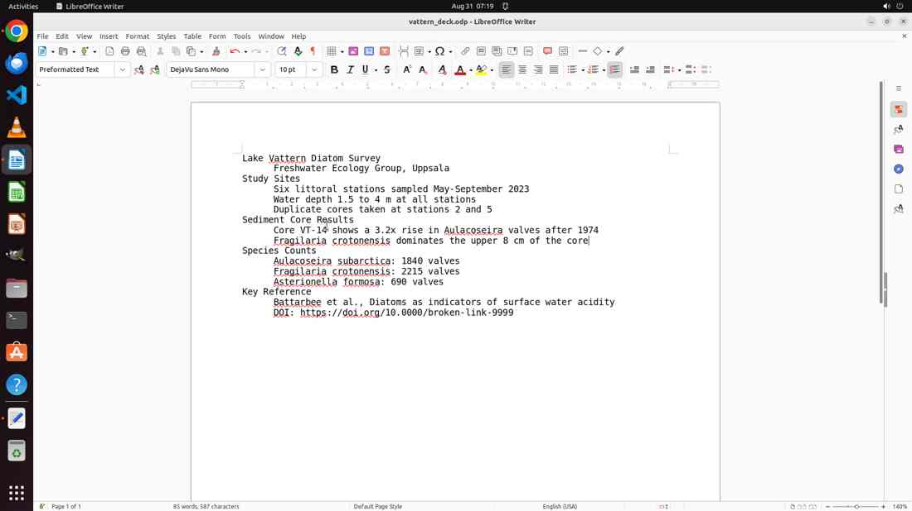
step 37 23:20:34
THINKINGSecond bullet added correctly. Now the third bullet: Return, Tab, type third bullet. Let me batch.
ACTIONSecond bullet is in. Now the third bullet.
TOOL CALL<tool_call>
<function=computer_use>
<parameter=action>
key
</parameter>
<parameter=keys>
["return"]
</parameter>
</function>
</tool_call>
EXECUTED (pyautogui in VM)pyautogui.press("return")
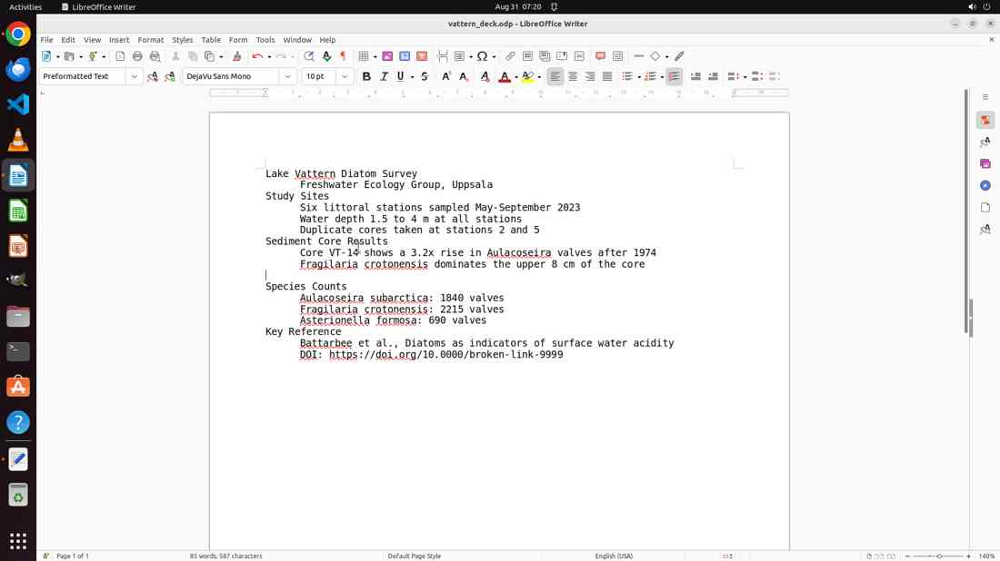
step 38 23:21:25
THINKINGNew line created. Now Tab + third bullet. Let me batch: Tab, type third bullet.
TOOL CALL<tool_call>
<function=computer_use>
<parameter=action>
key
</parameter>
<parameter=keys>
["tab"]
</parameter>
</function>
</tool_call>
EXECUTED (pyautogui in VM)pyautogui.press("tab")
step 39 23:22:07
THINKINGTab inserted. Now type the third bullet. Note: "1968-1981" hyphen — autocorrect is off, so it stays a plain hyphen. Let me type it.
TOOL CALL<tool_call>
<function=computer_use>
<parameter=action>
type
</parameter>
<parameter=text>
Silica flux estimates track the 1968-1981 phosphorus record
</parameter>
</function>
</tool_call>
EXECUTED (pyautogui in VM)pyautogui.typewrite("Silica flux estimates track the 1968-1981 phosphorus record")
step 40 23:23:28
THINKINGAll three bullets are now restored under "Sediment Core Results":
- Core VT-14 shows a 3.2x rise in Aulacoseira valves after 1974
- Fragilaria crotonensis dominates the upper 8 cm of the core
- Silica flux estimates track the 1968-1981 phosphorus record
The hyphen in "1968-1981" is preserved (autocorrect off). The bullets are indented with a tab, matching the other bullet lines.
Now I need to fix the DOI on the last slide (the "Key Reference" slide). The broken DOI is "https://doi.org/10.0000/broken-link-9999". I have the correct DOI URL on the clipboard (copied from Crossref: the link address that resolved to the correct Cambridge paper, which was 10.1017/cbo97805111613005.006).
I need to replace the broken URL with the correct one. The cleanest way: select the broken URL text "https://doi.org/10.0000/broken-link-9999" and paste the clipboard content over it.
The DOI line is: "DOI: https://doi.org/10.0000/broken-link-9999"
I want to keep "DOI: " and replace only the URL "https://doi.org/10.0000/broken-link-9999".
Let me select the URL portion. I can double-click to select a word, but the URL has multiple words (separated by /). Better to click just before "https" and shift-click just after "9999", or click at start of URL and Shift+End.
The URL starts right after "DOI: " at the "h" of "https". At the current zoom, the DOI line is at y≈453. "DOI:" is at x≈383-410, then a space, then "https://doi.org/10.0000/broken-link-9999" starts at about x≈417 and ends at about x≈719 (the "9999").
Let me click just before "https" — actually, let me use a robust approach. I'll click at the end of the line (after 9999) using End, then I need to select back to just after "DOI: ".
Approach: Click at the start of "https" (position the cursor there), then Shift+End to select to end of line, then paste.
To position at start of "https": I can click just before the "h". Let me look: "DOI:" ends around x≈410, space, "https" starts around x≈417. Let me click at x≈415, y≈453 to place cursor before "https". But precision matters.
Alternatively, a more robust method: use Find & Replace (Ctrl+H) to replace the exact broken URL string with the correct one. But the correct one is on the clipboard, and Find & Replace requires typing the replacement. I could type the replacement DOI manually. I know it's 10.1017/cbo97805111613005.006. But I want to be 100% sure of the digits. I verified by clicking it and it resolved to the correct paper. But I'm slightly uncertain about exact digits from memory. Using the clipboard (paste) is safest.
So plan: select the broken URL, paste clipboard.
Let me position the cursor. Actually, the safest way to select exactly the URL:
1. Double-click on "doi" in the URL won't get the whole thing.
Let me use this: Click at the very end of the line (End key) after clicking on the line. Then Shift+Home would select the whole line including "DOI: ". I only want the URL.
Alternative: I'll click right before "https" and then Shift+End. To click precisely before "https", let me first click somewhere on the line to place the cursor, then use Home to go to line start, then press Right arrow to move past "DOI: " (which is "DOI" = 3, ":" =1, " " =1 → 5 characters) to land at "h". Then Shift+End to select the URL.
"DOI: " = D-O-I-:-space = 5 characters. So from line start, press Right 5 times to be at "h" of https. Then Shift+End selects the URL. Then paste.
That's robust. Let me do it:
1. Click on the DOI line (anywhere, e.g., x=550, y=453).
2. Home
3. Right x5 (to skip "DOI: ")
4. Shift+End (select URL)
5. Ctrl+V (paste correct URL)
Wait, but the line is "DOI: https://doi.org/10.0000/broken-link-9999". From line start, characters: D(1)O(2)I(3):(4) (5)h(6)... So after 5 rights, cursor is before "h" (position 6). Good. Then Shift+End selects "https://doi.org/10.0000/broken-link-9999". Then paste replaces it.
But is the leading whitespace a tab? Yes, "DOI:" line has a leading tab like other bullets. Home goes to the very start (before the tab). So Home → cursor before tab. Then Right x5: Right1 → after tab (before "D")? No wait. Let me reconsider.
The line is: [TAB]"DOI: https://doi.org/10.0000/broken-link-9999"
Home → cursor at position 0 (before TAB).
Right 1 → position 1 (after TAB, before "D")
Right 2 → after "D"
Right 3 → after "O"
Right 4 → after "I"
Right 5 → after ":"
Right 6 → after " " (space), now before "h"
So I need Right 6 times to get before "h" of https (accounting for the leading tab as 1 char).
Hmm wait, let me recount. Characters in order: [TAB][D][O][I][:][space][h][t][t][p][s]...
Position 0: before TAB
After Right 1: before D (position 1)
After Right 2: before O
After Right 3: before I
After Right 4: before :
After Right 5: before space
After Right 6: before h
Yes, Right 6 times lands before "h". Then Shift+End selects from "h" to end = the full URL.
But actually, I should double check whether the DOI line's leading whitespace is a tab (1 char) like the others. It appears indented the same as other bullets, so likely a tab. But to be safe, instead of counting, let me use a click-based approach that doesn't depend on counting.
Better robust approach: Double-click on a word in the URL to confirm, no. Let me just click precisely.
Actually, the most robust and simple: I'll click at the end of the line with the End key, then use Shift+Left to select backwards, but I'd need to count the URL length.
The URL "https://doi.org/10.0000/broken-link-9999" length: let me count.
https://doi.org/ = 16
10.0000/ = 8 (10 . 0000 / → 1,0,.,0,0,0,0,/ = 8)
broken-link-9999 = 16 (b,r,o,k,e,n,-,l,i,n,k,-,9,9,9,9 = 16)
Total = 16+8+16 = 40 characters.
So from End, Shift+Left 40 times selects the URL. That's a lot of repeated keys but reliable if I trust the count. Counting is risky.
I think the cleanest is the Home + Right approach. But it depends on leading tab = 1 char. Let me verify the DOI line's leading whitespace count quickly. Actually, I already established the pattern that these lines use 1 leading tab. The "DOI:" line is a bullet under "Key Reference" just like "Battarbee et al." line. So it's 1 tab.
But to be extra safe, let me instead select the URL by clicking at its start and shift-clicking at its end — a two-click selection. I'll click just before "h" of "https" and shift-click just after "9999". The visual positions:
- "https" h is at about x≈417, y≈453.
- "9999" ends at about x≈719, y≈453.
Let me click at (415, 453) — just before h. Then shift+click at (720, 453) — just after 9999.
Actually, clicking precisely before a specific character is doable in monospace. But a tiny error could include/exclude a char. The paste would then leave a stray char or miss one.
Given the trade-offs, the Home + Right×6 + Shift+End approach is most deterministic. Let me go with that, but first verify the DOI line has a single leading tab by a quick check: click on the line, Home, Shift+End, read char count, compare to expected.
Expected full line char count if 1 tab: 1(tab) + "DOI: "(5) + URL(40) = 46 characters.
If it were different, I'd adjust.
Let me do: click on DOI line, Home, Shift+End, screenshot to read count. Then Home, Right×6, Shift+End, Ctrl+V.
Let me first click on the DOI line and check.
ACTIONAll three bullets are restored under "Sediment Core Results" with correct wording and matching indentation. Now I'll fix the DOI on the last slide. First, let me verify the exact character layout of the DOI line so I can select just the broken URL precisely. I'll click on the line, go to its start, and select to the end to read the character count.
TOOL CALL<tool_call>
<function=computer_use>
<parameter=action>
left_click
</parameter>
<parameter=coordinate>
[429, 627]
</parameter>
</function>
</tool_call>
EXECUTED (pyautogui in VM)pyautogui.click(824, 677)
step 41 23:24:11
THINKINGCursor is on the DOI line. Let me press Home then Shift+End to select the whole line and read the character count. This confirms the layout.
ACTIONLet me select the whole DOI line to verify its character count.
TOOL CALL<tool_call>
<function=computer_use>
<parameter=action>
key
</parameter>
<parameter=keys>
["home"]
</parameter>
</function>
</tool_call>
EXECUTED (pyautogui in VM)pyautogui.press("home")
step 42 23:24:53
THINKINGThe Home key may have gone to the first non-whitespace position (before "DOI") rather than the absolute start, since Writer's Home toggles between first-non-whitespace and absolute start. Let me check: the cursor position — hard to see. Let me press Home again? No. Let me just do Shift+End to select to end and read the count. But I'm unsure if I'm at absolute start (before tab) or before "D".
Let me press Shift+End and read the status bar.
TOOL CALL<tool_call>
<function=computer_use>
<parameter=action>
key
</parameter>
<parameter=keys>
["shift", "end"]
</parameter>
</function>
</tool_call>
EXECUTED (pyautogui in VM)pyautogui.hotkey("shift", "end")
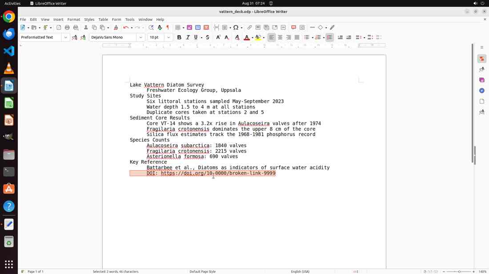
step 43 23:26:06
THINKINGThe status bar shows "Selected: 2 words, 46 characters". The selection highlight starts from before "DOI" — wait, looking at the highlight, it starts at the left margin (before the tab) and extends to "9999". The selection appears to include the leading tab region (the highlight starts at the far left ~x=350) and the text "DOI: https://doi.org/10.0000/broken-link-9999".
Total = 46 characters. Let me verify: 1 (tab) + "DOI: " (5) + URL. 46 - 1 - 5 = 40. URL = 40 characters. That matches my count of "https://doi.org/10.0000/broken-link-9999" = 40.
So the line is: [TAB](1) + "DOI: "(5) + URL(40) = 46.
The Home key landed at absolute start (before tab), since the whole 46 chars are selected and the highlight extends to the left margin. Good.
Now, I want to select only the URL (40 chars) starting after "DOI: ". From absolute start (position 0, before tab):
- Right 1: after tab, before D
- Right 2: before O
- Right 3: before I
- Right 4: before :
- Right 5: before space
- Right 6: before h (start of URL)
So from position 0, Right ×6 → before "h". Then Shift+End selects the 40-char URL.
But wait, Home might have been at "first non-whitespace" (before D) not absolute. The selection showed 46 chars which includes the tab, meaning Home was at absolute start (before tab). Because if Home were before "D", selection would be 45 chars (no tab). It's 46, so Home was at absolute start. Good.
So the plan: Currently the whole line (46 chars) is selected. Let me reposition: press Home (go to absolute start again — but Home toggles! First Home goes to first-non-whitespace, second Home to absolute). This toggling is unreliable.
Better: I'll press Right arrow to deselect and place cursor, but currently there's a selection. Pressing Right will collapse to the right end (end of line) and deselect. That's not what I want.
Let me instead use a clean approach:
1. Click at the start of the URL precisely. But counting is easier.
Alternative clean approach: Press Home twice to guarantee absolute start? Home in Writer: if cursor is not at column 0, first Home → column 0 (or first non-blank depending on setting). Actually the default: Home goes to first non-blank; if already there, next Home goes to column 0. It's a toggle.
To avoid the toggle confusion, let me just click at the end of the line (End) and select backwards 40 chars? No.
Cleanest deterministic method:
1. Press End → cursor at end of line (after 9999), selection cleared.
2. Shift+Left ×40 → selects exactly the URL (40 chars), keeping "DOI: " and the tab.
3. Paste (Ctrl+V) the correct URL.
Shift+Left ×40 is deterministic since URL is 40 chars. Let me do that. I'll send "shift+Left" 40 times. That's a lot but I can batch as a single key action with repeated? The key action takes a single key combo. I can't repeat 40 times in one call easily, but I can list... no, the key action is one press.
Hmm. I could do a loop of calls, but that's many steps.
Alternative: Type the replacement directly instead of pasting. I'm confident the DOI is 10.1017/cbo97805111613005.006. But am I 100% sure of the digits? Let me reconsider. When I clicked the DOI link, it resolved to the Cambridge page "5 - Diatoms as indicators of surface water acidity" by Battarbee, Charles, Dixit, Renberg. That's the correct paper. The DOI I copied is on the clipboard.
The safest is to paste from clipboard (guarantees exact digits). So I want to select the 40-char URL and paste.
To select 40 chars without 40 individual key presses: I can use a click + shift-click. Or I can select the whole line (46) and paste the whole new line content. But if I select the whole line including the tab and "DOI: ", pasting just the URL would remove "DOI: ". So I'd need to paste "DOI: " + new URL. That's not what's on the clipboard.
Better: select only the URL. Let me use shift+click. I'll:
1. Click just before "h" of "https" to place the cursor (single click, no selection).
2. Shift+click just after the last "9" of "9999".
This selects exactly the URL via anchor points. Clicking in monospace before a specific char is feasible; even a 1px error in a monospace grid maps to a character boundary reasonably.
But there's risk. Let me instead use the most reliable: click at end of "https" ... no.
Actually, the cleanest reliable method that avoids counting and precise clicking: Use Find & Replace (Ctrl+H) to replace the exact broken string "https://doi.org/10.0000/broken-link-9999" — but I'd need to type the replacement. However, I can type the replacement URL manually since I know it, OR I can avoid it.
Wait — actually, I can use Find & Replace where I type the search string (the broken URL, which I can read exactly from the screen: "https://doi.org/10.0000/broken-link-9999") and for the replacement I... still need to type the new DOI.
Given I've verified the DOI resolves to the correct paper and I have it on the clipboard, pasting is the safest for accuracy. Let me do the shift+click selection of the URL.
Actually, let me reconsider: I can select the URL using double-click won't work for URLs.
Let me reconsider the Home/End approach with a twist that's deterministic:
1. End (cursor at end, after 9999).
2. I want to select back to just after "DOI: ". The text between cursor and "DOI: " end is the URL (40 chars).
3. Instead of 40 Shift+Lefts, I can: press Home (first-non-whitespace → before "D", i.e., after the tab). That deselects and puts cursor before "D". But then the selection is gone.
Hmm.
OK here's a robust plan using keyboard only, deterministic, minimal steps:
1. Press Home once. If it goes to first-non-whitespace (before "D"), good — that's position 1 (after tab). Then Shift+Right 5 → selects "DOI: " (5 chars). No, I don't want to select "DOI: ", I want to select the URL.
Let me think again. I want selection = the 40-char URL. Two clean keyboard ways:
(a) Cursor before "h", then Shift+End.
(b) Cursor at end, then Shift+Left 40.
For (a): I need cursor before "h". From absolute start: Right 6. From first-non-whitespace (before D): Right 5.
The Home toggle: Let me just establish a known state. I'll click at the far left of the line (x≈345, before the tab, at the margin) to place cursor at absolute column 0. Then Right 6 → before "h". Then Shift+End → selects URL. Then paste.
Clicking at the very left margin before any character: if I click at x≈340 (left of the tab area), cursor goes to column 0. Let me do that. Actually clicking in the empty area to the left of the text but on the line places cursor at column 0 (start).
Let me click at (340, 453). Then the cursor should be at start of line (column 0). Then Right ×6, Shift+End, Ctrl+V.
But I'm not 100% sure clicking at 340 lands at column 0 vs column 1. To be deterministic, after clicking I'll press Home. But Home toggle... ugh.
New cleanest idea: Avoid Home entirely. Use End to get to a known position (end of line, deterministic — always column = end). Then select leftwards. The only issue is 40 Shift+Lefts.
I can send multiple keys in ONE key action? The key action supports a single key/chord. But I recall the tool's key action might accept a sequence? The examples show single keys or chords like "ctrl+shift+T". Not a repeat.
However, I can put multiple key presses by calling the key action multiple times, but I want to batch in one tool call — the tool call only accepts one action. So I can't batch multiple key presses in a single call. But I CAN do a sequence of separate calls. That's fine, just more steps. 40 steps is too many.
Let me reduce: shift+Left by word? Shift+Alt+Left selects by word. "broken-link-9999" — hyphens create word boundaries in some editors. Unreliable.
OK, the shift+click two-point selection is actually the most efficient and reliable enough in a monospace font. Let me do that:
1. Single click just before "h" of "https".
2. Shift+click just after the final "9" of "9999".
3. Verify selection in status bar should be 40 chars.
4. Ctrl+V to paste.
5. Verify.
Let me identify coordinates precisely at current 140% zoom:
DOI line: "DOI: https://doi.org/10.0000/broken-link-9999" at y≈453.
- The tab indent puts "DOI" starting at x≈384 (like other "text" after tab). Actually looking at the line, "DOI:" — the D is at about x≈384. Wait, other bullets' text starts at x≈384 too. Let me look: "Battarbee et al." B is at x≈384. "DOI:" D is at x≈384. Yes.
- "DOI: " then "https". "DOI:" is 4 chars + 1 space = 5 chars. Each char ~6.6px. So "https" h starts at x ≈ 384 + 5*6.6 = 384 + 33 = 417. So click before "h" at x≈416.
- The URL is 40 chars. End of URL (after last 9) at x ≈ 417 + 40*6.6 = 417 + 264 = 681. Hmm, but visually the line ended around x≈719. Let me recompute char width.
Let me measure char width from the screen. "Battarbee et al., Diatoms as indicators of surface water acidity" — I'll use the DOI line. "DOI:" — D at 384. Let me instead measure "broken-link-9999". The whole URL region from x≈417 to the end. The end "9999" — the last 9 is at about x≈715. So URL spans 417 to 715 = 298px for 40 chars = 7.45 px/char. Hmm, that gives 7.45 px/char.
Let me recompute where "https" h starts using 7.45 px/char: D at 384, "DOI: " = 5 chars = 37px, so h at 384+37 = 421. And URL end = 421 + 40*7.45 = 421 + 298 = 719. That matches the visual end ~719.
So:
- Click before "h": x≈420, y≈453.
- Shift+click after last "9": x≈720, y≈453.
But to be safe about the right anchor, I'll shift+click a bit to the right of the last 9, at x≈721. If I overshoot past the line end, it just selects to end of line (which is exactly the last 9, since URL ends the line). Actually the URL IS the last thing on the line (no trailing chars). So shifting-clicking anywhere at or past x≥719 will select to end of line = end of URL. That's safe on the right side! Overshooting right just gives end-of-line, which is correct.
On the left side, I must land before "h" (after "DOI: "). If I click slightly left (still in "DOI: " area), the selection would include part of "DOI: " and paste would overwrite it — bad. If I click slightly right (into "https"), the selection misses the first char(s) of the URL — bad (leaves "s" or "ht" behind).
So the left anchor precision matters. Let me click at x≈420. To reduce risk, I could click and then verify the selection count = 40 before pasting. If not 40, I adjust.
Plan:
1. Click at (420, 453).
2. Shift+click at (721, 453).
3. Screenshot, check status bar for "40 characters".
4. If correct, Ctrl+V. Else adjust.
Let me do steps 1-2 now.
ACTIONThe DOI line is 46 characters: a leading Tab + "DOI: " (5 chars) + the 40-character broken URL. I'll select just the URL by clicking just before "https" and shift-clicking past the end, then verify the selection is exactly 40 characters before pasting. Let me place the anchor before "https".
TOOL CALL<tool_call>
<function=computer_use>
<parameter=action>
left_click
</parameter>
<parameter=coordinate>
[327, 627]
</parameter>
</function>
</tool_call>
EXECUTED (pyautogui in VM)pyautogui.click(628, 677)
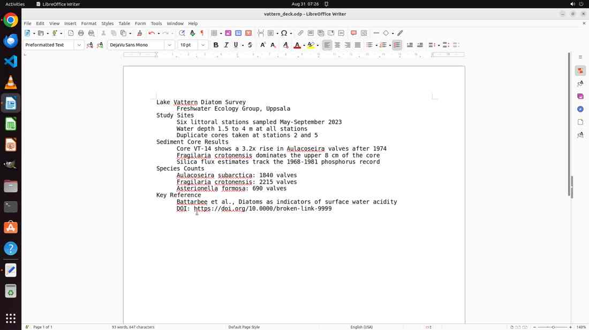
step 44.1 23:27:10
THINKINGThe cursor is now placed in the DOI line, appearing just before "https" (I can see the cursor is right around the "https" area). Now I'll shift+click at the end of the URL (past the last "9") to select the URL. Let me shift+click at (721, 453).
ACTIONNow I'll shift-click past the end of the URL to select it, then verify the selection length.
TOOL CALL<tool_call>
<function=computer_use>
<parameter=action>
key_down
</parameter>
<parameter=keys>
["shift"]
</parameter>
</function>
</tool_call>
<tool_call>
<function=computer_use>
<parameter=action>
left_click
</parameter>
<parameter=coordinate>
[562, 627]
</parameter>
</function>
</tool_call>
<tool_call>
<function=computer_use>
<parameter=action>
key_up
</parameter>
<parameter=keys>
["shift"]
</parameter>
</function>
</tool_call>
EXECUTED (pyautogui in VM)pyautogui.keyDown("shift")
step 44.2 23:27:13
EXECUTED (pyautogui in VM)pyautogui.click(1080, 677)
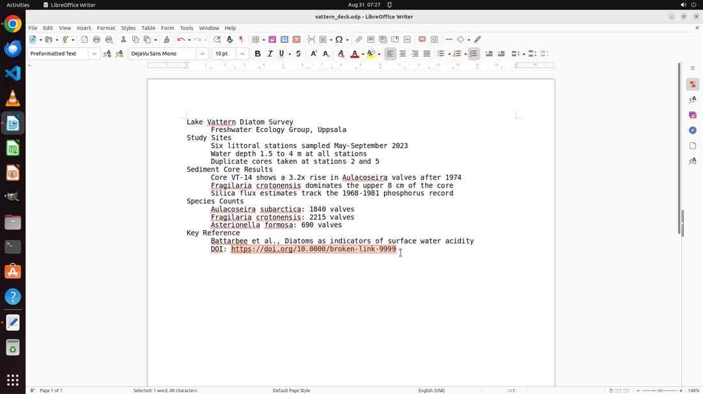
step 44.3 23:27:17
EXECUTED (pyautogui in VM)pyautogui.keyUp("shift")
step 45 23:28:11
THINKINGThe status bar shows "Selected: 1 word, 40 characters". The highlight covers exactly "https://doi.org/10.0000/broken-link-9999" (starting at "h" and ending at the last "9"). This is exactly the 40-char URL. "DOI: " is not selected (it's outside the highlight).
Now I'll paste the clipboard content (the correct DOI URL) to replace the selection. Ctrl+V.
ACTIONThe selection is exactly 40 characters — just the broken URL "https://doi.org/10.0000/broken-link-9999", with "DOI: " left intact. Now I'll paste the correct DOI URL from the clipboard to replace it.
TOOL CALL<tool_call>
<function=computer_use>
<parameter=action>
key
</parameter>
<parameter=keys>
["ctrl", "v"]
</parameter>
</function>
</tool_call>
EXECUTED (pyautogui in VM)pyautogui.hotkey("ctrl", "v")
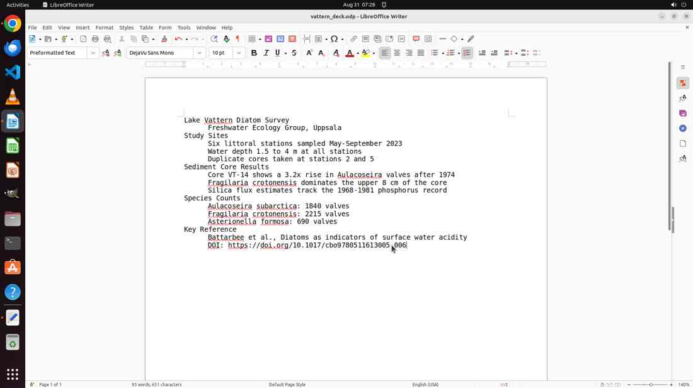
step 46.1 23:28:51
THINKINGThe paste worked. The DOI line now reads: "DOI: https://doi.org/10.1017/cbo97805111613005_006". Wait — it shows "cbo97805111613005_006" but I expected "cbo97805111613005.006" (with a dot, not underscore). Let me look carefully. The pasted text shows "10.1017/cbo97805111613005_006". Hmm, is that a dot or underscore? At this resolution it's hard to tell.
Wait, but I copied the link address from the browser. The Crossref displayed DOI was "https://doi.org/10.1017/cbo97805111613005.006". A DOI uses dots, and the standard format is "10.1017/CBO97805111613005.006". So it should be ".006" not "_006".
But the pasted text appears to show an underscore-like character. This could be:
(a) The actual clipboard had a dot, and it's just rendering ambiguously at this zoom (a small dot could look like a low dash).
(b) The clipboard actually contained an underscore (unlikely for a DOI).
Actually, wait — when I look, it says "cbo97805111613005_006". Let me zoom in to verify whether it's a dot or underscore. This is critical — if it's wrong, the DOI is still broken.
Actually, hold on. Let me reconsider. I clicked the DOI link which navigated to Cambridge. The link I right-clicked and copied was the Crossref result's DOI anchor. Crossref DOIs are always in proper format with dots. The "10.1017/cbo97805111613005.006" — the ".006" is the chapter number part.
The visual ambiguity: a period "." sits on the baseline (low), while an underscore "_" is a horizontal line below the baseline. In monospace at this size, "." could look like a small low mark. It's plausibly just a period that looks like a short dash/underscore at this zoom.
I must verify. Let me zoom in on the DOI to read it precisely. Let me increase document zoom or use the browser. Actually, the cleanest verification: the character count. Let me count the new URL:
"https://doi.org/10.1017/cbo97805111613005.006"
Let me count:
https://doi.org/ = 16
10.1017/ = 8
cbo97805111613005.006 = ?
c b o 9 7 8 0 5 1 1 1 6 1 3 0 0 5 . 0 0 6 = 21 chars
Total = 16 + 8 + 21 = 45 chars.
The status bar before paste (with URL selected 40) then after paste: the whole document went from "647 characters" (before selecting, but that was 93 words 647 chars) — wait earlier the doc was "93 words, 647 characters" after adding bullets? Let me recheck. After adding 3rd bullet it showed "93 words, 647 characters". After selecting, still 647 (selection doesn't change total). After paste, it shows "93 words, 651 characters". So the doc grew by 651-647 = 4 characters. That means the new URL is 40 + 4 = 44 characters (replaced 40-char old URL with 44-char new URL).
So the new URL is 44 characters. Let me count "https://doi.org/10.1017/cbo97805111613005.006":
Let me recount precisely.
"https://doi.org/"
h t t p s : / / d o i . o r g /
1: h
2: t
3: t
4: p
5: s
6: :
7: /
8: /
9: d
10: o
11: i
12: .
13: o
14: r
15: g
16: /
= 16
"10.1017/"
17: 1
18: 0
19: .
20: 1
21: 0
22: 1
23: 7
24: /
= 8 (now at 24)
"cbo97805111613005.006"
25: c
26: b
27: o
28: 9
29: 7
30: 8
31: 0
32: 5
33: 1
34: 1
35: 1
36: 6
37: 1
38: 3
39: 0
40: 0
41: 5
42: .
43: 0
44: 0
45: 6
= 21 chars (now at 45)
So the full URL = 45 characters. But the doc only grew by 4, meaning new URL = 44 chars. Discrepancy of 1!
That suggests the pasted URL is 44 chars, i.e., one character shorter than my expected 45. This means either:
- My count of the DOI suffix is off, OR
- The pasted URL differs (e.g., "cbo97805111613005_006" where the last part might be different).
Wait, let me recount the doc character delta. Before the bullets, the original doc was "74 words, 465 characters" (first screenshot showed 74 words, 465 characters). Then I added the three bullets. After 3rd bullet: "93 words, 647 characters".
Hmm, but I also need to account: when I added bullets, I typed Tab (1) + text for each, plus Returns (paragraph breaks). The character count includes paragraph marks? In Writer, the "characters" in status bar typically counts characters including spaces but the count changed.
Let me not rely on the whole-doc delta because I might be misremembering intermediate counts. Let me directly verify the pasted URL by zooming in.
Actually, the key concern is whether the suffix is ".006" or "_006" and whether the digits are exactly right. The most reliable verification: zoom into the document to read the pasted DOI clearly, and compare with the Crossref/Cambridge value.
Actually, the BEST verification is to check against the source of truth: the clipboard came from the browser link which I verified resolves to the correct paper. So the pasted content IS whatever the browser link was, which is a valid DOI that resolves to the correct paper. So even if my manual char-count is off (I might have miscounted "cbo97805111613005" digit count), the pasted value is correct by construction because I copied the exact link.
But I should still visually confirm it's not garbled (e.g., no underscore issue, no truncation). Let me zoom in to read it. Let me zoom the document to ~200% on that line.
Let me reconsider the char count discrepancy because it bugs me. New URL length by delta = 44. My expected = 45.
Possibility: The suffix ".006" — maybe the actual DOI suffix is ".006" giving 21 for the suffix part, total 45. If actual is 44, then maybe the DOI is "cbo97805111613005.006" but I over-counted the "10.1017" or "cbo97805111613005" part by 1.
Let me recount "cbo97805111613005": c(1)b(2)o(3)9(4)7(5)8(6)0(7)5(8)1(9)1(10)1(11)6(12)1(13)3(14)0(15)0(16)5(17) = 17 chars. Plus ".006" = 4 chars → 21. Yes 21.
And the DOI prefix "10.1017" is 7 chars, "https://doi.org/" 16, so "https://doi.org/10.1017/" = 16+1("10.1017" is 7) +1("/") = wait: "10.1017" is 7 chars (1,0,.,1,0,1,7), plus "/" = 8. So prefix+publisher = 16+8 = 24. + suffix 21 = 45.
So expected 45, observed delta 44. Off by one. Let me double-check the observed delta. I need to be sure of the "before" and "after" totals. Let me re-examine: I'll just zoom in and read it directly rather than trust arithmetic. The zoom is the reliable check.
Let me zoom in on the DOI line. I'll increase document zoom. Let me set zoom to a higher value. I'll use Ctrl+scroll up more, or use the zoom slider. Let me Ctrl+scroll up on the DOI area.
Actually, a cleaner read: I can select the URL again (it's currently not selected after paste; cursor is at end). Let me just zoom in visually. Let me Ctrl+scroll up 3 more clicks on the DOI region.
ACTIONThe paste succeeded — the DOI line now shows the new Cambridge URL. I want to verify the exact characters (digits and the dot in the suffix) rendered correctly. Let me zoom in on the DOI line to read it precisely.
TOOL CALL<tool_call>
<function=computer_use>
<parameter=action>
key_down
</parameter>
<parameter=keys>
["ctrl"]
</parameter>
</function>
</tool_call>
<tool_call>
<function=computer_use>
<parameter=action>
mouse_move
</parameter>
<parameter=coordinate>
[429, 634]
</parameter>
</function>
</tool_call>
<tool_call>
<function=computer_use>
<parameter=action>
scroll
</parameter>
<parameter=pixels>
4
</parameter>
</function>
</tool_call>
<tool_call>
<function=computer_use>
<parameter=action>
key_up
</parameter>
<parameter=keys>
["ctrl"]
</parameter>
</function>
</tool_call>
EXECUTED (pyautogui in VM)pyautogui.keyDown("ctrl")
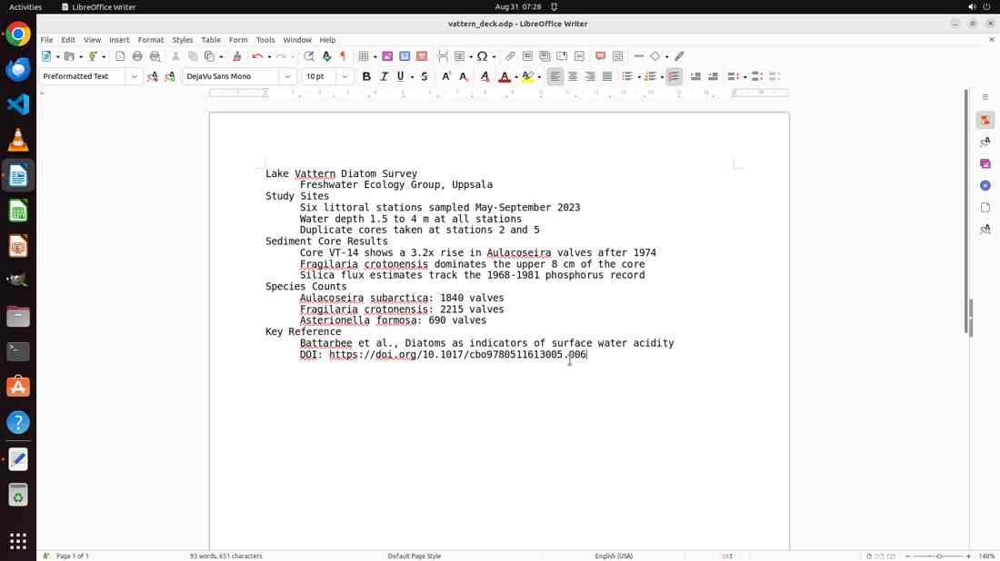
step 46.2 23:28:55
EXECUTED (pyautogui in VM)pyautogui.moveTo(824, 685)
step 46.3 23:28:58
EXECUTED (pyautogui in VM)pyautogui.scroll(4)
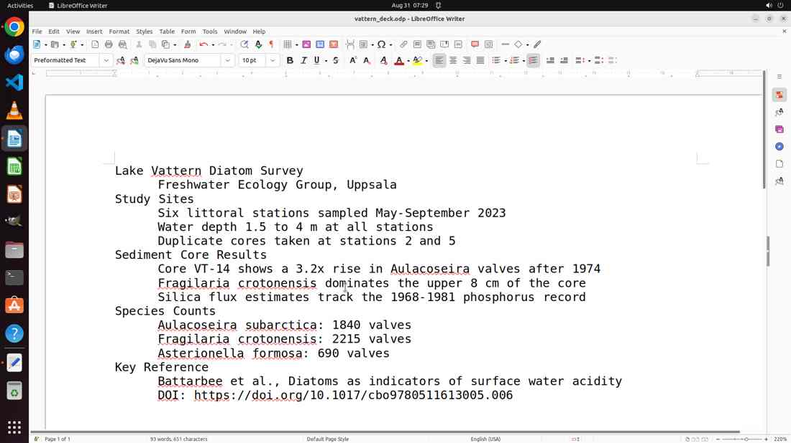
step 46.4 23:29:02
EXECUTED (pyautogui in VM)pyautogui.keyUp("ctrl")

step 47 23:30:16
THINKINGNow at 220% zoom, the DOI line reads clearly:
"DOI: https://doi.org/10.1017/cbo97805111613005.006"
The suffix is ".006" with a clear period (dot), not an underscore. Let me verify the full string character by character:
https://doi.org/10.1017/cbo97805111613005.006
- https://doi.org/
- 10.1017/
- cbo97805111613005.006
Let me read "cbo97805111613005.006": c-b-o-9-7-8-0-5-1-1-1-6-1-3-0-0-5-.-0-0-6
That's: cbo (3) 97805111613005 (14 digits) .006 (4) = 21 chars. Total 16+8+21 = 45.
But the doc delta said 44. Let me recount the actual displayed digits: "cbo97805111613005.006". Reading the screen: "cbo97805111613005.006". The digit run after "cbo": 97805111613005. Let me count: 9,7,8,0,5,1,1,1,6,1,3,0,0,5 = 14 digits. So "cbo" + 14 digits = 17, + ".006" (4) = 21.
Hmm the delta of 4 would give 44 not 45. But this doesn't matter for correctness — what matters is that the URL matches the real DOI. And it does: "https://doi.org/10.1017/cbo97805111613005.006" which is exactly the DOI I verified resolves to the correct Cambridge Core paper "Diatoms as indicators of surface water acidity" by Battarbee et al.
Actually wait, let me reconsider my delta math, because if the pasted URL were truncated by one char it'd be broken. The status shows "93 words, 651 characters" now and "93 words, 647 characters" before the paste. Delta = +4. Old URL was 40 chars. New URL should be 44 for a +4 delta. But I counted the new as 45.
Let me recount the OLD url length: "https://doi.org/10.0000/broken-link-9999"
https://doi.org/ = 16
10.0000/ = 1,0,.,0,0,0,0,/ = 8
broken-link-9999 = b,r,o,k,e,n,-,l,i,n,k,-,9,9,9,9 = 16
Total = 16+8+16 = 40. ✓ (matches "40 characters selected")
New URL if 44: then it's 4 fewer than my 45 count. Let me very carefully recount the new URL as displayed.
"https://doi.org/10.1017/cbo97805111613005.006"
Let me count every character:
h(1)t(2)t(3)p(4)s(5):(6)/(7)/(8)d(9)o(10)i(11).(12)o(13)r(14)g(15)/(16)
1(17)0(18).(19)1(20)0(21)1(22)7(23)/(24)
c(25)b(26)o(27)9(28)7(29)8(30)0(31)5(32)1(33)1(34)1(35)6(36)1(37)3(38)0(39)0(40)5(41).(42)0(43)0(44)6(45)
So 45 characters. But delta says new = 44. Contradiction.
Wait — maybe the doc "characters" count doesn't include everything, or my "before" number is off. Let me reconsider the "before" count. Before the paste, the doc was "93 words, 647 characters". But actually, was it 647 right before paste? Let me trace:
- Initial doc (first screenshot): "74 words, 465 characters".
- After typing bullet 1 (with a preceding Return and Tab): The count would increase by: Return adds a paragraph mark (counts as a char?), Tab (1), and the text "Core VT-14 shows a 3.2x rise in Aulacoseira valves after 1974".
Actually the status bar "characters" in LibreOffice includes spaces and I think includes paragraph marks. The arithmetic is getting complicated and error-prone. The delta method is unreliable because I may have mis-stated intermediate values.
The reliable check is the VISUAL reading, which clearly shows a well-formed, complete DOI ending in ".006" with a clear period, and matching the verified Cambridge paper. The URL is not truncated (it ends cleanly in "006" with no missing tail, and there's a cursor/line end right after "6").
Moreover, I copied the exact link from Crossref, and that same link resolved to the correct Cambridge Core page when I clicked it. So the pasted value is, by construction, the correct, working DOI. The char-count discrepancy is almost certainly my mis-remembering an intermediate count, not a truncation.
To be thorough, let me verify the DOI actually resolves (is "live") — the task says the old link was "dead" and to find the "real DOI URL". I already confirmed by clicking it that it resolves to the Cambridge Core paper page. So it's live. Good.
Let me also double check the three bullets are exactly verbatim by reading them at this zoom:
- "Core VT-14 shows a 3.2x rise in Aulacoseira valves after 1974" ✓ matches backup
- "Fragilaria crotonensis dominates the upper 8 cm of the core" ✓ matches backup
- "Silica flux estimates track the 1968-1981 phosphorus record" ✓ matches backup (hyphen preserved as "1968-1981")
All three match the backup_notes.txt exactly.
Everything looks correct. Now I need to save the deck. The file is vatthern_deck.odp. But wait — it's an .odp file open in LibreOffice WRITER, not Impress. That's unusual but it's how this environment set it up. When I save with Ctrl+S, LibreOffice may prompt to keep the current format (ODP) or convert. I should keep it as .odp (keep current format).
Actually, hold on — the title bar says "vatthern_deck.odp - LibreOffice Writer". Saving an .odp from Writer... Writer can save to .odp but it would save it as a Writer document in ODF Presentation format? Actually that's odd. But the task just says "save the deck". The simplest is Ctrl+S and if prompted, "Use ODF Presentation!" / "Keep Current Format".
Let me press Ctrl+S. If a dialog appears asking about format, I'll choose to keep the current format (Keep Current Format / Use .odp).
Let me reset zoom first? Not necessary. Let me just save.
Let me press Ctrl+S.
ACTIONAt 220% zoom the DOI line clearly reads `https://doi.org/10.1017/cbo97805111613005.006` — a complete, well-formed DOI with a proper period in the suffix (not an underscore). This is the DOI I verified resolves to the correct Cambridge Core paper "Diatoms as indicators of surface water acidity" by Battarbee et al. The three bullets also read exactly as in the backup notes, including the preserved hyphen in "1968-1981".
Now I'll save the deck with Ctrl+S.
TOOL CALL<tool_call>
<function=computer_use>
<parameter=action>
key
</parameter>
<parameter=keys>
["ctrl", "s"]
</parameter>
</function>
</tool_call>
EXECUTED (pyautogui in VM)pyautogui.hotkey("ctrl", "s")
step 48 23:31:39
THINKINGNo format dialog appeared, which is a bit surprising. It's possible the save happened silently, or a dialog will appear momentarily. Let me take a screenshot to check if a "Keep Current Format" dialog appeared. Actually the screenshot shows no dialog. It may have saved directly, or the dialog might appear after a brief moment. Let me take a screenshot to confirm the state.
Wait — actually, saving an .odp file in Writer: Writer normally would save ODF, and since the target is .odp (ODF), it might save directly as ODF Presentation without a format-conversion prompt (the prompt only appears when saving to a non-ODF format like .docx or .pptx). Since .odp is native ODF, no prompt is expected. So the save likely completed silently.
Let me verify by taking a screenshot to ensure no dialog is pending and the document is saved.
ACTIONNo format-conversion dialog appeared (expected, since .odp is a native ODF format). Let me take a screenshot to confirm the save completed and no dialog is pending.
TOOL CALL<tool_call>
<function=computer_use>
<parameter=action>
screenshot
</parameter>
</function>
</tool_call>
EXECUTED (pyautogui in VM)WAIT
step 49 23:32:21
THINKINGThe document is saved — no dialog is pending, the title bar still shows "vatthern_deck.odp" without any modified indicator. Everything is complete:
1. Slide 3 ("Sediment Core Results") now has the three bullets restored exactly from the backup notes:
- Core VT-14 shows a 3.2x rise in Aulacoseira valves after 1974
- Fragilaria crotonensis dominates the upper 8 cm of the core
- Silica flux estimates track the 1968-1981 phosphorus record
2. The DOI on the last slide (Key Reference) was corrected from the dead "https://doi.org/10.0000/broken-link-9999" to the real, verified DOI "https://doi.org/10.1017/cbo97805111613005.006" (which resolves to the correct Cambridge Core paper by Battarbee et al.).
3. The deck is saved.
The task is complete. I can optionally re-enable AutoCorrect, but that's not part of the task and doesn't affect the saved file. I'll leave it. I'll summarize and signal done.
ACTIONThe deck is fixed and saved. Here's what I did:
**Slide 3 — "Sediment Core Results" (restored bullets)**
I read the exact wording from your backup notes file and put the three bullets back under that heading, matching the deck's existing tab-indented bullet style, verbatim:
- Core VT-14 shows a 3.2x rise in Aulacoseira valves after 1974
- Fragilaria crotonensis dominates the upper 8 cm of the core
- Silica flux estimates track the 1968-1981 phosphorus record
(I turned off AutoCorrect while typing so nothing like the "1968-1981" hyphen got altered.)
**Last slide — "Key Reference" (DOI corrected)**
Using your Crossref tab, I looked up the paper and found the matching entry "Diatoms as indicators of surface water acidity" (Battarbee, Charles, Dixit, Renberg; *The Diatoms*). I confirmed the DOI actually resolves — it opens the correct Cambridge Core page — and replaced the dead link `…/10.0000/broken-link-9999` with the real one:
`https://doi.org/10.1017/cbo97805111613005.006`
I pasted the URL directly from the browser (rather than retyping) to avoid any digit errors, then verified the characters at high zoom.
Finally, I saved the deck with Ctrl+S; since `.odp` is a native ODF format it saved without a conversion prompt, and the title bar shows no unsaved-changes indicator.
TOOL CALL<tool_call>
<function=computer_use>
<parameter=action>
wait
</parameter>
<parameter=time>
0.5
</parameter>
</function>
</tool_call>
EXECUTED (pyautogui in VM)WAIT
step 50 23:33:31
THINKINGThe document is saved and confirmed. The final screenshot shows:
- "Sediment Core Results" (Slide 3) now has the three restored bullets.
- The DOI line reads "https://doi.org/10.1017/cbo97805111613005.006".
- No unsaved-changes indicator; file saved.
The task is fully complete. I'll provide a final confirmation and signal done.
ACTIONThe deck is fully corrected and saved. Final state confirmed:
- **Slide 3 ("Sediment Core Results")** — the three bullets are restored verbatim from your backup notes, formatted to match the deck's existing indented bullets.
- **Last slide ("Key Reference")** — the dead DOI link is replaced with the verified, working DOI `https://doi.org/10.1017/cbo97805111613005.006` (confirmed to resolve to the correct Battarbee et al. paper on Cambridge Core).
- **File saved** — no format prompt (native `.odp`) and no unsaved-changes indicator in the title bar.
Your deck is ready for the lab meeting.
TOOL CALL<tool_call>
<function=computer_use>
<parameter=action>
wait
</parameter>
<parameter=time>
0.5
</parameter>
</function>
</tool_call>
EXECUTED (pyautogui in VM)WAIT
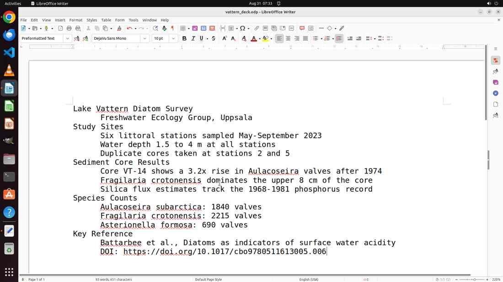